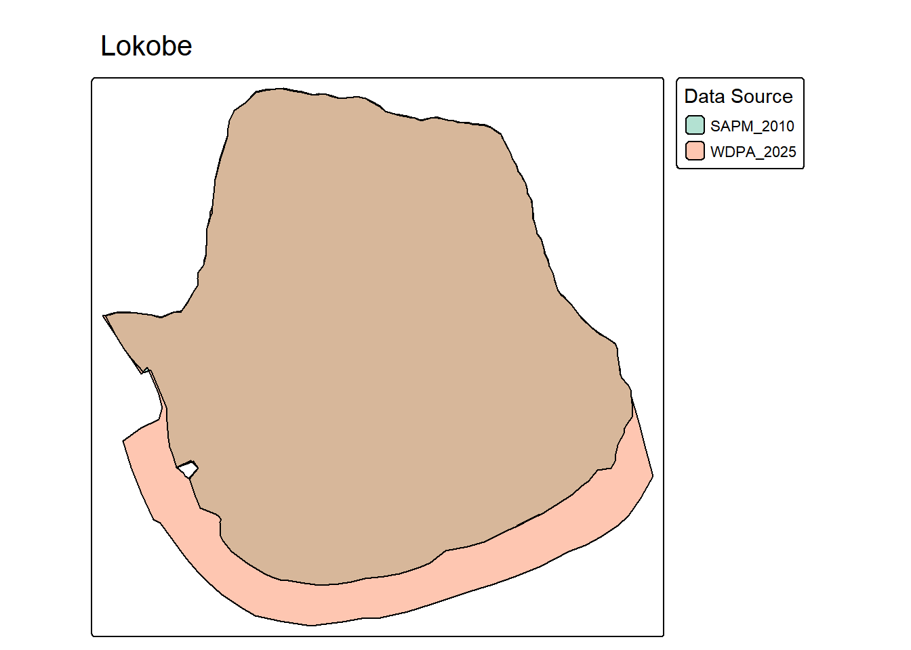

La première porte d’entrée pour identifier des amendements spatiaux est constituée par les textes légaux recensés dans CNLEGIS. Certains types de décisions, en particulier celles mentionnant le mot “modifiant” dans leur titre, signalent une modification des limites ou du statut spatial d’une aire protégée.
Dans cette section, nous identifions les décisions légales qui mentionnent explicitement une modification, et les aires protégées concernées.
WarningLimitation des URLs CNLEGIS
Les liens vers CNLEGIS construits automatiquement a partir du numero de texte (par exemple https://cnlegis.gov.mg/page_num_find_direct/?2015-730) ne redirigent pas directement vers le decret concerne mais vers une page de recherche generique. Cette limitation empeche la verification directe des sources a partir des URLs. Les numeros de texte (num_texte) restent neanmoins fiables comme identifiants pour une recherche manuelle sur le site CNLEGIS.
Nous identifions ainsi 70 aires protégées pour lesquelles au moins une décision légale mentionne explicitement une modification.
Pour chaque décision légale identifiée comme potentiellement modificative, nous adoptons la logique suivante. Nous utilisons l’application interactive (Shiny) disponible dans Chapter 5. Nous observons la date et le contenu des décisions qui la concernent. Si les textes légaux indiquent bien une modification de périmètre, on passe en revue les données disponibles, afin d’identifier la source la plus crédible qui représente le périmètre précédent.
Voir le code
tmap_mode("plot")all_PAs_conso <-read_rds("data/id/all_PAs_conso.rds")resolve_wdpaid <-function(wdpa_name_or_id, decisions) {# English: accept WDPAID (numeric) or WDPA_NAME (character) and return a single WDPAIDif (is.numeric(wdpa_name_or_id)) {return(wdpa_name_or_id[1]) } wdpaid <- decisions |>filter(WDPA_NAME == wdpa_name_or_id) |>pull(WDPAID) |>first()if (is.na(wdpaid)) {stop("WDPAID introuvable pour: ", wdpa_name_or_id) } wdpaid}show_cnlegis_for_pa <-function( wdpa_name_or_id, decisions,pattern =NULL,columns =c("date_texte","type_texte","num_texte","type_decision","id_texte","objet_texte" )) {# English: show all CNLEGIS decisions for a PA, optionally filter by a pattern on type_decision# Returns a gt table with specified columnsrequire(gt) wdpaid <-resolve_wdpaid(wdpa_name_or_id, decisions)# Get PA name for title wdpa_name <-if (is.numeric(wdpa_name_or_id)) { decisions |>filter(WDPAID == wdpaid) |>pull(WDPA_NAME) |>first() } else { wdpa_name_or_id } out <- decisions |>filter(WDPAID == wdpaid) |>arrange(date_texte)if (!is.null(pattern)) { out <- out |>filter(str_detect(type_decision, pattern)) }# Select requested columns (only those that exist) available_cols <-intersect(columns, names(out)) out <- out |>select(all_of(available_cols))# Return as gt table with title out |>gt() |>tab_header(title =paste0("Entrées pour l'AP ", wdpa_name, " dans la base CNLEGIS") )}plot_pa_sources <-function( wdpa_name,data = all_PAs_conso,decisions = pa_decisions,wdpa_historical_path ="data/MDG_WDPA_Consolidated.parquet",sources =NULL) {# Check if input is a WDPAID (integer) or name (string)if (is.numeric(wdpa_name)) { wdpaid <- wdpa_name } else {# Look up the WDPAID from pa_decisions wdpaid <- decisions |>filter(WDPA_NAME == wdpa_name) |>pull(WDPAID) |>first()# Check if WDPAID was foundif (is.na(wdpaid)) {message("No WDPAID found in pa_decisions for: ", wdpa_name)return(NULL) } }# Filter all observations matching this WDPAID from all_PAs_conso pa_subset <- data |>filter(WDPAID == wdpaid)# Load and filter WDPA historical data wdpa_historical <-read_parquet(wdpa_historical_path) |>mutate(geometry =st_as_sfc(geometry)) |>st_as_sf() |>filter(WDPAID == wdpaid) |>mutate(dataset_id =paste0("WDPA_", data_year)) |>st_transform(st_crs(pa_subset))# Combine both datasets pa_subset <-bind_rows(pa_subset, wdpa_historical)# Filter by specified sources if providedif (!is.null(sources) &&length(sources) >0) { pa_subset <- pa_subset |>filter(dataset_id %in% sources) |># Convert to factor with levels in the order specified by sourcesmutate(dataset_id =factor(dataset_id, levels = sources)) }# Check if any results foundif (nrow(pa_subset) ==0) {message("No protected area found with WDPAID: ", wdpaid)return(NULL) }# Get summary information n_obs <-nrow(pa_subset) datasets <-unique(pa_subset$dataset_id)# Create static plot map with all geometries in one layer (tmap v4 syntax)tmap_mode("plot") map <-tm_shape(pa_subset) +tm_polygons(fill ="dataset_id",fill_alpha =0.5,col ="black",lwd =1,fill.scale =tm_scale(values ="brewer.set2"),fill.legend =tm_legend(title ="Data Source",position =tm_pos_out("right") ) ) +tm_title(wdpa_name)return(map)}# Add a spatial amendment to SAT based on a legal decision## This function creates a SAT entry documenting a historical boundary or# secondary zone that differs from the current WDPA representation. It links# a geometry from curated spatial sources to a legal decision that marks# when this geometry ceased to be valid.## Working table format for efficient curation. Use export_amendments_to_yaml()# to convert to standardized YAML schema.## Parameters:# sat: Existing SAT table (sf object) or NULL to initialize# data: Consolidated spatial dataset (e.g., all_PAs_conso) containing# multiple representations of PAs from different sources# decisions: Legal decisions table with WDPAID linkage (e.g., pa_decisions)# wdpa_name_or_id: Either WDPAID (numeric) or WDPA_NAME (character)# decision_filter: Named list to identify the legal decision, can include:# - year: numeric year of decision# - type_decision_pattern: regex pattern for type_decision# - num_texte: exact legal instrument number# - id_texte: exact decision ID# manual_decision: Optional named list for decisions not in CNLEGIS# source_dataset_id: The dataset_id in 'data' containing the historical geometry# amendment_type: Type of spatial amendment. Allowed values:# - "boundary_modification": Legal change to external boundaries# - "secondary_zoning": Additional zoning (core zones, buffers)# - "correction": Data correction (wrong geometry in WDPA)# valid_from: Optional start date (Date or character). If NULL, remains NA# notes: Optional notes (defaults to decision object text)## Returns:# Updated SAT table (sf object) with new amendment(s) appendedadd_modif_sat <-function( sat, data, decisions, wdpa_name_or_id,decision_filter =NULL,manual_decision =NULL, source_dataset_id,amendment_type ="boundary_modification",valid_from =NULL,notes =NULL) {# Helper: accept WDPAID (numeric) or WDPA_NAME (character) and return a single WDPAID resolve_wdpaid <-function(wdpa_name_or_id, decisions) {if (is.numeric(wdpa_name_or_id)) {return(wdpa_name_or_id[1]) } wdpaid <- decisions |>filter(WDPA_NAME == wdpa_name_or_id) |>pull(WDPAID) |>first()if (is.na(wdpaid)) {stop("WDPAID introuvable pour: ", wdpa_name_or_id) } wdpaid }# Validate amendment_type for SAT allowed_types_sat <-c("boundary_modification","secondary_zoning","correction" )if (!amendment_type %in% allowed_types_sat) {stop("amendment_type must be one of: ",paste(allowed_types_sat, collapse =", "),". Got: ", amendment_type ) } wdpaid <-resolve_wdpaid(wdpa_name_or_id, decisions)# Warn when boundary_modification lacks valid_from: without it,# generate_timeline() cannot create the pre-modification temporal state.if (amendment_type =="boundary_modification"&&is.null(valid_from)) {warning("add_modif_sat(): boundary_modification for WDPAID=", wdpaid," has no valid_from. The pre-modification period will not be ","represented in the timeline unless STATUS_YR provides a fallback." ) }# Use manual_decision if provided, otherwise search CNLEGIS databaseif (!is.null(manual_decision)) {# Manual decision provided - use it directly dec <-tibble(date_texte = manual_decision$date_texte,type_texte = manual_decision$type_texte,num_texte = manual_decision$num_texte,id_texte =if (!is.null(manual_decision$id_texte)) { manual_decision$id_texte } else {NA_character_ },objet_texte = manual_decision$objet_texte,cnlegis_url =NA_character_ ) } else {# Search CNLEGIS database with filtersif (!is.list(decision_filter)) {stop("decision_filter doit être une liste ou NULL si manual_decision est fourni." ) }# Select exactly one legal decision based on filters dec <- decisions |>filter(WDPAID == wdpaid)if (!is.null(decision_filter$year)) { dec <- dec |>filter(lubridate::year(date_texte) == decision_filter$year) }if (!is.null(decision_filter$type_decision_pattern)) { dec <- dec |>filter(str_detect(type_decision, decision_filter$type_decision_pattern)) }if (!is.null(decision_filter$num_texte)) { dec <- dec |>filter(num_texte == decision_filter$num_texte) }if (!is.null(decision_filter$id_texte)) { dec <- dec |>filter(id_texte == decision_filter$id_texte) } dec <- dec |>arrange(date_texte)if (nrow(dec) ==0) {stop("Aucune décision CNLEGIS ne correspond au filtre pour WDPAID=", wdpaid ) }if (nrow(dec) >1) {stop("Filtre CNLEGIS ambigu: plusieurs décisions correspondent. Raffiner decision_filter." ) } }# Extract historical geometry from consolidated spatial data geom_before <- data |>filter(WDPAID == wdpaid, dataset_id == source_dataset_id) |>filter(dataset_id !="CNLEGIS_2024") |>st_zm(drop =TRUE, what ="ZM") |>st_make_valid()if (nrow(geom_before) ==0) {stop("Aucune géométrie trouvée pour source_dataset_id=", source_dataset_id," et WDPAID=", wdpaid ) }# Build SAT entry with geometry and metadata sat_entry <- geom_before |>mutate(WDPAID = wdpaid,amendment_type = amendment_type,valid_from =if (!is.null(valid_from)) {as.Date(valid_from) } else {as.Date(NA) },valid_to = dec$date_texte[1],date_precision ="day",data_source = source_dataset_id,legal_source = dec$num_texte[1],cnlegis_url =if ("cnlegis_url"%in%names(dec)) { dec$cnlegis_url[1] } else {NA_character_ },notes =ifelse(is.null(notes), dec$objet_texte[1], notes) ) |>select( WDPAID, geometry, amendment_type, valid_from, valid_to, date_precision, data_source, legal_source, cnlegis_url, notes )# Initialize or append to SATif (is.null(sat)) { sat_new <- sat_entry } else { sat_new <-bind_rows(sat, sat_entry) }# Assign stable sequential amendment_id sat_new <- sat_new |>mutate(amendment_id =row_number()) |>relocate(amendment_id, .before = WDPAID) sat_new}# Export amendments to YAML format for dynamic_wdpa registry## This function converts working tables (sat/fat) to standardized YAML files# following the dynamic_wdpa amendment schema. Spatial amendments include# separate GeoJSON geometry files.## Parameters:# spatial: SAT table (sf object) with spatial amendments, or NULL# attribute: FAT table (tibble) with attribute amendments, or NULL# output_dir: Directory for YAML files (default: "data/amendments")# iso3: ISO3 country code (default: "MDG")# wdpa_reference: WDPA dataset for PA name lookup (default: wdpa_mdg)## Output structure:# {output_dir}/{iso3}-{wdpaid}-{year}-{type}-{seq}.yml# {output_dir}/geoms/{iso3}-{wdpaid}-{year}-{type}-{seq}.geojson## Returns: tibble with amendment_id and file pathsexport_amendments_to_yaml <-function(spatial =NULL,attribute =NULL,output_dir ="data/amendments",iso3 ="MDG",wdpa_reference = wdpa_mdg) {require(yaml)require(sf)require(dplyr)require(stringr)# Create output directoriesdir.create(output_dir, showWarnings =FALSE, recursive =TRUE) geom_dir <-file.path(output_dir, "geoms")dir.create(geom_dir, showWarnings =FALSE, recursive =TRUE)# Helper: get PA name from WDPAID get_wdpa_name <-function(wdpaid, wdpa_ref) { name <- wdpa_ref |>st_drop_geometry() |>filter(WDPAID == wdpaid) |>pull(NAME) |>first()if (is.na(name)) {return(as.character(wdpaid)) } name }# Helper: generate amendment_id generate_amendment_id <-function( iso3, wdpaid, valid_from, valid_to, amendment_type, seq ) { year <-if ( amendment_type =="temporary_protection"&&!is.na(valid_from) ) { lubridate::year(valid_from) } elseif (!is.na(valid_to)) { lubridate::year(valid_to) } else {"NODATE" }sprintf("%s-%d-%s-%s-%03d", iso3, wdpaid, year, amendment_type, seq) }# Helper: create legal_instrument object create_legal_instrument <-function(row) {# Check if we have legal instrument data (check column existence first) has_fat_cols <-"legal_instrument_number"%in%names(row) has_sat_cols <-"legal_source"%in%names(row)if (!has_fat_cols &&!has_sat_cols) {return(NULL) }# If we have neither SAT nor FAT data populated, return NULLif ( has_fat_cols &&is.na(row$legal_instrument_number) && has_sat_cols &&is.na(row$legal_source) ) {return(NULL) }if (!has_fat_cols && has_sat_cols &&is.na(row$legal_source)) {return(NULL) }# Determine source and structureif ( has_fat_cols &&!is.null(row$legal_instrument_source) &&!is.na(row$legal_instrument_source) ) {# FAT formatlist(source = row$legal_instrument_source,type = row$legal_instrument_type,number = row$legal_instrument_number,date =as.character(row$legal_instrument_date),id =if (!is.na(row$legal_instrument_id)) { row$legal_instrument_id } else {NULL },url =if (!is.na(row$legal_instrument_url)) { row$legal_instrument_url } else {NULL } ) } else {# SAT format (simpler)list(source ="CNLEGIS",type ="décret", # assume decree if not specifiednumber = row$legal_source,date =NULL, # not available in SATid =NULL,url =if (!is.na(row$cnlegis_url)) row$cnlegis_url elseNULL ) } }# Helper: generate a human-readable temporal description from amendment fields generate_temporal_description <-function( amendment_type, valid_from, valid_to, legal_instrument ) { type_labels <-c(boundary_modification ="Modification des limites",secondary_zoning ="Zonage secondaire",correction ="Correction de donnees",status_change ="Changement de statut",temporary_protection ="Protection temporaire",governance_change ="Changement de gouvernance" ) label <- type_labels[amendment_type] %||% amendment_type parts <- labelif (!is.null(valid_from) &&!is.null(valid_to)) { parts <-paste0(parts, " du ", valid_from, " au ", valid_to) } elseif (!is.null(valid_from)) { parts <-paste0(parts, " depuis le ", valid_from) } elseif (!is.null(valid_to)) { parts <-paste0(parts, " jusqu'au ", valid_to) }if (!is.null(legal_instrument) &&!is.null(legal_instrument$number)) { instr_type <- legal_instrument$type %||%"texte"# Avoid stutter when instrument type matches the amendment labelif (tolower(instr_type) ==tolower(label)) { parts <-paste0(parts, " (n. ", legal_instrument$number, ")") } else { parts <-paste0( parts," selon ", instr_type," n. ", legal_instrument$number ) }if (!is.null(legal_instrument$date)) { parts <-paste0(parts, " du ", legal_instrument$date) } }paste0(parts, ".") } exported <-list()# Process spatial amendmentsif (!is.null(spatial) &&nrow(spatial) >0) { spatial_grouped <- spatial |>group_by(WDPAID, valid_to, amendment_type) |>mutate(seq =row_number()) |>ungroup()for (i inseq_len(nrow(spatial_grouped))) { row <- spatial_grouped[i, ] amendment_id <-generate_amendment_id( iso3, row$WDPAID, row$valid_from, row$valid_to, row$amendment_type, row$seq )# Save geometry to GeoJSON geom_filename <-paste0(amendment_id, ".geojson") geom_path <-file.path(geom_dir, geom_filename) geom_relative <-file.path("geoms", geom_filename) row |>select(geometry) |>st_transform(4326) |>st_write(geom_path, delete_dsn =TRUE, quiet =TRUE)# Build YAML structure amendment <-list(amendment_id = amendment_id,iso3 = iso3,wdpaid =as.integer(row$WDPAID),wdpa_name =get_wdpa_name(row$WDPAID, wdpa_reference),amendment_kind ="spatial",amendment_type = row$amendment_type,valid_from =if (!is.na(row$valid_from)) {as.character(row$valid_from) } else {NULL },valid_to =if (!is.na(row$valid_to)) {as.character(row$valid_to) } else {NULL },legal_instrument =create_legal_instrument(row),temporal_description =generate_temporal_description( row$amendment_type,if (!is.na(row$valid_from)) as.character(row$valid_from) elseNULL,if (!is.na(row$valid_to)) as.character(row$valid_to) elseNULL,create_legal_instrument(row) ),notes =if (!is.na(row$notes)) row$notes elseNULL,geometry_ref = geom_relative,geometry_crs_epsg =4326L,geometry_source_dataset_id = row$data_source )# Remove NULL values amendment <- amendment[!sapply(amendment, is.null)]# Write YAML yaml_filename <-paste0(amendment_id, ".yml") yaml_path <-file.path(output_dir, yaml_filename)write_yaml(amendment, yaml_path) exported[[length(exported) +1]] <-list(amendment_id = amendment_id,kind ="spatial",yaml_path = yaml_path,geom_path = geom_path ) } }# Process attribute amendmentsif (!is.null(attribute) &&nrow(attribute) >0) { attribute_grouped <- attribute |>group_by(WDPAID, valid_to, amendment_type) |>mutate(seq =row_number()) |>ungroup()for (i inseq_len(nrow(attribute_grouped))) { row <- attribute_grouped[i, ] amendment_id <-generate_amendment_id( iso3, row$WDPAID, row$valid_from, row$valid_to, row$amendment_type, row$seq )# Extract non-NA WDPA attributes wdpa_attributes <-c("WDPA_PID","PA_DEF","NAME","ORIG_NAME","DESIG","DESIG_ENG","DESIG_TYPE","IUCN_CAT","INT_CRIT","MARINE","REP_M_AREA","REP_AREA","NO_TAKE","NO_TK_AREA","STATUS","STATUS_YR","GOV_TYPE","OWN_TYPE","MANG_AUTH","MANG_PLAN","VERIF","METADATAID","SUB_LOC","PARENT_ISO3","ISO3","SUPP_INFO","CONS_OBJ" ) attributes_list <-list()for (attr in wdpa_attributes) {if (attr %in%names(row) &&!is.na(row[[attr]])) { attributes_list[[attr]] <- row[[attr]] } }# Build YAML structure amendment <-list(amendment_id = amendment_id,iso3 = iso3,wdpaid =as.integer(row$WDPAID),wdpa_name =get_wdpa_name(row$WDPAID, wdpa_reference),amendment_kind ="attribute",amendment_type = row$amendment_type,valid_from =if (!is.na(row$valid_from)) {as.character(row$valid_from) } else {NULL },valid_to =if (!is.na(row$valid_to)) {as.character(row$valid_to) } else {NULL },legal_instrument =create_legal_instrument(row),temporal_description =generate_temporal_description( row$amendment_type,if (!is.na(row$valid_from)) as.character(row$valid_from) elseNULL,if (!is.na(row$valid_to)) as.character(row$valid_to) elseNULL,create_legal_instrument(row) ),notes =if (!is.na(row$notes)) row$notes elseNULL,attributes =if (length(attributes_list) >0) attributes_list elseNULL )# Remove NULL values amendment <- amendment[!sapply(amendment, is.null)]# Write YAML yaml_filename <-paste0(amendment_id, ".yml") yaml_path <-file.path(output_dir, yaml_filename)write_yaml(amendment, yaml_path) exported[[length(exported) +1]] <-list(amendment_id = amendment_id,kind ="attribute",yaml_path = yaml_path,geom_path =NA_character_ ) } }# Return summarybind_rows(exported)}# Add attribute amendments to FAT based on a legal decision## This function creates FAT entries documenting historical attribute states# that differ from current WDPA representation. It uses a wide format where# each amendment is a single row with one column per WDPA attribute that may# have changed.## Working table format for efficient curation. Use export_amendments_to_yaml()# to convert to standardized YAML schema.## Parameters:# fat: Existing FAT table (tibble) or NULL to initialize# decisions: Legal decisions table with WDPAID linkage (e.g., pa_decisions)# wdpa_name_or_id: Either WDPAID (numeric) or WDPA_NAME (character)# decision_filter: Named list to identify the legal decision (optional if using manual_decision)# manual_decision: Optional named list for decisions not in CNLEGIS# attributes: Named list of attribute changes, e.g.:# list(DESIG = "Réserve Naturelle Intégrale", IUCN_CAT = "Ia")# Only attributes that differ from WDPA should be provided.# amendment_type: Type of attribute amendment. Allowed values:# - "status_change": Change in designation type (RNI to PN, etc.)# - "temporary_protection": legally binding but bounded in time (e.g., arrêté de protection provisoire)# - "governance_change": Change in management authority# - "correction": Data correction (wrong attribute in WDPA)# valid_from: Optional start date (Date or character). If NULL, remains NA# notes: Optional notes (defaults to decision object text)## Returns:# Updated FAT table (tibble) with new amendment row appended. Unspecified# WDPA attributes are set to NA (will inherit from WDPA in CAR).add_modif_fat <-function( fat, decisions, wdpa_name_or_id,decision_filter =NULL,manual_decision =NULL, attributes,amendment_type ="status_change",valid_from =NULL,valid_to =NULL,notes =NULL) { resolve_wdpaid <-function(wdpa_name_or_id, decisions) {if (is.numeric(wdpa_name_or_id)) {return(wdpa_name_or_id[1]) } wdpaid <- decisions |>filter(WDPA_NAME == wdpa_name_or_id) |>pull(WDPAID) |>first()if (is.na(wdpaid)) {stop("WDPAID introuvable pour: ", wdpa_name_or_id) } wdpaid }# Validate that either decision_filter or manual_decision is providedif (is.null(decision_filter) &&is.null(manual_decision)) {stop("Either decision_filter or manual_decision must be provided.") }if (!is.null(decision_filter) &&!is.null(manual_decision)) {stop("Cannot use both decision_filter and manual_decision. Choose one.") }# Validate amendment_type for FAT allowed_types_fat <-c("status_change","temporary_protection","governance_change","correction" )if (!amendment_type %in% allowed_types_fat) {stop("amendment_type must be one of: ",paste(allowed_types_fat, collapse =", "),". Got: ", amendment_type ) } wdpaid <-resolve_wdpaid(wdpa_name_or_id, decisions)# Handle manual decision (not in CNLEGIS)if (!is.null(manual_decision)) {if (!is.list(manual_decision)) {stop("manual_decision must be a list.") } required_fields <-c("date_texte", "type_texte", "num_texte") missing <-setdiff(required_fields, names(manual_decision))if (length(missing) >0) {stop("manual_decision missing required fields: ",paste(missing, collapse =", ") ) } dec <-tibble(date_texte =as.Date(manual_decision$date_texte),type_texte = manual_decision$type_texte,num_texte = manual_decision$num_texte,id_texte = manual_decision$id_texte %||%NA_character_,objet_texte = manual_decision$objet_texte %||%NA_character_ ) } else {# Handle CNLEGIS decisionif (!is.list(decision_filter)) {stop("decision_filter doit être une liste.") }# Select exactly one legal decision based on filters dec <- decisions |>filter(WDPAID == wdpaid)if (!is.null(decision_filter$year)) { dec <- dec |>filter(lubridate::year(date_texte) == decision_filter$year) }if (!is.null(decision_filter$type_decision_pattern)) { dec <- dec |>filter(str_detect(type_decision, decision_filter$type_decision_pattern)) }if (!is.null(decision_filter$num_texte)) { dec <- dec |>filter(num_texte == decision_filter$num_texte) }if (!is.null(decision_filter$id_texte)) { dec <- dec |>filter(id_texte == decision_filter$id_texte) } dec <- dec |>arrange(date_texte)if (nrow(dec) ==0) {stop("Aucune décision CNLEGIS ne correspond au filtre pour WDPAID=", wdpaid ) }if (nrow(dec) >1) {stop("Filtre CNLEGIS ambigu: plusieurs décisions correspondent.") } }# Determine date precision date_precision <-if (!is.na(dec$date_texte[1])) {"day" } elseif (!is.na(lubridate::year(dec$date_texte[1]))) {"year" } else {NA_character_ }# Define all possible WDPA attributes (wide format columns) wdpa_attributes <-c("WDPA_PID","PA_DEF","NAME","ORIG_NAME","DESIG","DESIG_ENG","DESIG_TYPE","IUCN_CAT","INT_CRIT","MARINE","REP_M_AREA","REP_AREA","NO_TAKE","NO_TK_AREA","STATUS","STATUS_YR","GOV_TYPE","OWN_TYPE","MANG_AUTH","MANG_PLAN","VERIF","METADATAID","SUB_LOC","PARENT_ISO3","ISO3","SUPP_INFO","CONS_OBJ" )# Determine legal instrument source legal_source <-if (!is.null(manual_decision)) {"manual" } else {"CNLEGIS" }# Create base FAT entry with metadata fat_entry <-tibble(WDPAID = wdpaid,valid_from =if (!is.null(valid_from)) {as.Date(valid_from) } else {as.Date(NA) },valid_to =if (!is.null(valid_to)) {as.Date(valid_to) } else {as.Date(NA) # NULL valid_to stays NA (no end date) },date_precision = date_precision,legal_instrument_type =tolower(dec$type_texte[1]),legal_instrument_number = dec$num_texte[1],legal_instrument_date = dec$date_texte[1],legal_instrument_source = legal_source,legal_instrument_id =if (!is.null(manual_decision)) { dec$id_texte[1] } elseif ("cnlegis_url"%in%names(dec)) { dec$id_texte[1] } else {NA_character_ },legal_instrument_url =if (!is.null(manual_decision)) {NA_character_ } elseif ("cnlegis_url"%in%names(dec)) { dec$cnlegis_url[1] } else {NA_character_ },amendment_type = amendment_type,notes =ifelse(is.null(notes),if (!is.na(dec$objet_texte[1])) dec$objet_texte[1] elseNA_character_, notes ) )# Add WDPA attribute columns (all NA initially)for (attr in wdpa_attributes) { fat_entry[[attr]] <-NA_character_ }# Populate provided attributesfor (attr_name innames(attributes)) {if (attr_name %in% wdpa_attributes) { fat_entry[[attr_name]] <-as.character(attributes[[attr_name]]) } else {warning("Attribute '", attr_name,"' is not a recognized WDPA field and will be ignored." ) } }# Reorder columns: metadata first, then WDPA attributes fat_entry <- fat_entry |>select( WDPAID, valid_from, valid_to, date_precision,all_of(wdpa_attributes), legal_instrument_type, legal_instrument_number, legal_instrument_date, legal_instrument_source, legal_instrument_id, legal_instrument_url, amendment_type, notes )# Initialize or append to FATif (is.null(fat)) { fat_new <- fat_entry } else { fat_new <-bind_rows(fat, fat_entry) }# Assign stable sequential amendment_id fat_new <- fat_new |>mutate(amendment_id =row_number()) |>relocate(amendment_id, .before = WDPAID) fat_new}
7.1 Schéma des amendements
Ce chapitre documente les amendements aux données WDPA pour les aires protégées de Madagascar. Les amendements sont identifiés par une revue systématique des textes légaux (CNLEGIS), des sources de données spatiales historiques, et de la littérature experte (principalement Goodman et al. 2018).
7.1.1 Format de sortie
Tous les amendements seront exportés vers un schéma YAML standardisé conçu pour le registre dynamic_wdpa. Ce format permet :
Contrôle de version : Chaque amendement est un fichier autonome suivi par git
Édition indépendante des outils : YAML et GeoJSON peuvent être édités avec n’importe quel éditeur de texte
Interopérabilité : Les formats standard facilitent l’échange de données et la validation
Transparence : Documentation claire des corrections avec références légales
7.1.2 Structure du schéma d’amendement
Chaque amendement est stocké dans un fichier YAML avec la structure suivante :
7.1.3 Exemple d’amendement spatial
amendment_id:"MDG-2314-2015-boundary_modification-001"iso3:"MDG"wdpaid:2314wdpa_name:"Montagne d'Ambre"amendment_kind:"spatial"amendment_type:"boundary_modification"valid_from:"1958-06-08"valid_to:"2015-05-06"legal_instrument:source:"CNLEGIS"type:"décret"number:"2015-776"date:"2015-05-06"id:"00123456"url:"https://cnlegis.gov.mg/..."notes:"Historical boundary 1958-2015 before extension via Décret 2015-776."temporal_description:"Modification des limites du 1958-06-08 au 2015-05-06 selon décret n. 2015-776 du 2015-05-06."geometry_ref:"geoms/MDG-2314-2015-boundary_modification-001.geojson"geometry_crs_epsg:4326geometry_source_dataset_id:"SAPM_2010"
7.1.4 Exemple d’amendement d’attributs
amendment_id:"MDG-5022-2015-correction-001"iso3:"MDG"wdpaid:5022wdpa_name:"Analamerana"amendment_kind:"attribute"amendment_type:"correction"valid_from:"1956-02-20"valid_to:"2015-08-10"legal_instrument:source:"CNLEGIS"type:"décret"number:"56-208"date:"1956-02-20"notes:"WDPA incorrectly shows PN/II. Correct designation is RS/IV per Décret 56-208."temporal_description:"Correction de donnees du 1956-02-20 au 2015-08-10 selon décret n. 56-208 du 1956-02-20."attributes:DESIG:"Réserve Spéciale"DESIG_ENG:"Special Reserve"IUCN_CAT:"IV"STATUS_YR:"1956"
7.1.5 Tables de travail
Pour une curation efficace dans R, ce document construit deux tables de travail :
sat (Spatial Amendment Table) : objet sf avec géométries pour les amendements spatiaux
fat (Feature Attribute Table) : tibble en format large pour les amendements d’attributs
Ces tables sont optimisées pour les opérations R (manipulation de géométries, filtrage, validation) et sont exportées vers le schéma YAML à la fin du document en utilisant export_amendments_to_yaml().
7.1.6 Typologie des amendements
boundary_modification : Changement légal des limites externes de l’AP
secondary_zoning : Couches de zonage additionnelles (zones noyau, zones tampons) qui complètent la limite principale de l’AP
correction : Erreur de données dans WDPA (mauvaise géométrie, mauvaise valeur d’attribut)
status_change : Changement de type de désignation (RNI to PN, RS to PN, etc.)
governance_change : Changement d’autorité de gestion
7.2 Décisions modifiant les aires protégées
Pour chaque AP, nous :
Révisons l’historique légal via CNLEGIS et Goodman et al. (2018)
Comparons les attributs WDPA avec la documentation légale
Vérifions les limites en utilisant l’outil de vérification visuelle (Chapter 5)
Documentons les amendements lorsque des divergences sont trouvées
7.2.1 Ambatotsirongorongo
Les données WDPA pour le WDPAID 352239 documentent une protection temporaire en 2007 puis une création définitive en 2015. Le cas est particulier, car la décision CNLEGIS disponible pour 2007 est une prorogation qui cite explicitement un arrêté initial de 2006 absent de la base CNLEGIS.
Voir le code
show_cnlegis_for_pa(352239, pa_decisions)
Entrées pour l'AP Ambatotsirongorongo dans la base CNLEGIS
date_texte
type_texte
num_texte
type_decision
id_texte
objet_texte
2007-08-20
Arrêté
13613/2007
prorogation, mise_protection_temporaire
39381
Prorogeant l'arrêté n° 3750/2006-MINENVEF du 15 mars 2006 portant protection temporaire de l'Aire protégée en création dénommée "Ambatotsirongorongo", District de Taolagnaro, Région d'Anosy.
2015-04-28
Décret
2015-792
creation_definitive
44643
Portant création de l'Aire Protégée dénommée "Ambatotsirongorongo" District de Tolagnaro, Région Anosy.
Le fragment pertinent de la décision CNLEGIS est le suivant :
“Vu l’arrêté n° 3750 / 2006-MINENVEF du 15 mars 2006 portant protection temporaire de l’aire protégée en création dénommée "Ambatotsirongorongo",”
“En application de l’article 2 de l’arrêté n° 3750/2006 du 15 mars 2006 portant protection temporaire de l’Aire Protégée en création dénommée "Ambatotsirongorongo", la durée de la mise en protection temporaire de l’Aire Protégée en création "Ambatotsirongorongo" est prorogée de douze (12) mois.”
Même si l’arrêté n° 3750/2006-MINENVEF du 15 mars 2006 n’est pas retrouvé directement dans CNLEGIS, l’arrêté de prorogation n° 13613/2007 du 20 août 2007 atteste clairement l’existence d’une première mise en protection temporaire en 2006. Nous retenons donc deux périodes temporaires successives dans l’historique juridique : une période initiale à partir du 15 mars 2006, puis une prorogation à partir du 20 août 2007, avant le décret de création définitive n° 2015-792 du 28 avril 2015. Comme il ne s’agit pas ici d’un amendement sur une protection temporaire, le traitement correspondant est centralisé dans la section Section 7.3.2.
Aspects légaux : Gestionnaire actuel : Madagascar National Parks (MNP) ; Gestion antérieure : aucune ; Création : selon le Décret n° 58-10 du 28 octobre 1958 (Création de la Réserve Spéciale) ; Modification de statut : Ambatovaky fut institué en réserve spéciale en 1958 selon le Décret n° 58-10 du 28 octobre 1958. Les limites de l’aire protégée ne furent précisées qu’en 1965 avec l’Arrêté n° 1036/MFR/FOR du 1 avril 1965 (60 050 ha) puis modifiées en 2015 suivant le Décret n° 2015-731 du 21 avril 2015 ; Dernière modification de statut : suivant le Décret n° 2015-731 du 21 avril 2015 ; Surface actuelle : 78 139 ha (selon le décret en vigueur).
L’attibut STATUS_YR d’Ambatovaky indiquent qu’elle a été créée en 1958, mais au moins une décision a modifié son statut depuis :
Voir le code
show_cnlegis_for_pa("Ambatovaky", pa_decisions)
Entrées pour l'AP Ambatovaky dans la base CNLEGIS
date_texte
type_texte
num_texte
type_decision
id_texte
objet_texte
1965-04-01
Arrêté
1036/65
modifiant
25437
Précisant les limites de la réserve spéciale d'Ambatovavy, située dans la sous-préfecture de Soanierana-Ivongo, province de Tamatave
2015-04-21
Décret
2015-731
modifiant
44676
Portant modification des limites de la Réserve Spéciale d'Ambatovaky et délimitation de sa Zone de Protection sise dans le District de Soanierana Ivongo, Région Analanjirofo.
Le périmètre correspondant à l’étendue de l’AP avant 2015 est celui fourni par de MNP.
On retient comme géométrie avant 2015 la meilleure source spatiale identifiée dans all_PAs_conso (ici MNP_2010), en attendant la vérification du périmètre alternatif (ANGAP 2002 / WDPA archives).
Voir le code
sat <-NULL|>add_modif_sat(data = all_PAs_conso,decisions = pa_decisions,wdpa_name_or_id ="Ambatovaky",decision_filter =list(year =2015, type_decision_pattern ="modifiant"),source_dataset_id ="MNP_2010",valid_from ="1958-10-28",notes ="Périmètre antérieur au décret modifiant (géométrie MNP_2010 retenue après vérification visuelle). Création par Décret 58-10 du 28 octobre 1958." )
Aspects légaux : Gestionnaire actuel : Madagascar National Parks (MNP) ; Gestion antérieure : Direction des Eaux et Forêts (Service de la Protection de la Nature d’Antananarivo et le Cantonnement Forestier de Moramanga) ; Création : selon le Arrêté n° 2778/MAER/SEGREF/FOR du 21 juillet 1970 ; Modification de statut : l’ancienne Station Forestière d’Analamazaotra, composée de deux parcelles, ainsi que la Réserve de faune pour Indris existant depuis 1970 (Arrêté n° 2778/MAER/SEGREF/FOR) constituent le parc national créé en 2015, selon le Décret n° 2015-732 du 21 avril 2015 ; Dernière modification de statut : suivant le Décret n° 2015-732 du 21 avril 2015 ; Surface actuelle : 874 ha (selon le décret en vigueur).
Les métadonnées indiquent que cette aire protégée a été créée en 1970 (Arrêté 2778/70), puis modifiée en 2015 :
Voir le code
show_cnlegis_for_pa(5021, pa_decisions)
Entrées pour l'AP Analamazaotra dans la base CNLEGIS
date_texte
type_texte
num_texte
type_decision
id_texte
objet_texte
1970-07-21
Arrêté
2778/70
creation_definitive
27854
Classant en réserves de faunes pour indris la station forestière d'Analamozaotra, Périnet, sous-préfecture de Moramanga
2015-04-21
Décret
2015-732
modifiant
45695
Portant changement de statut et modification des limites de la réserve de faune pour Indris de la station forestière d'Analamazaotra, en Parc National d'Analamazaotra et délmimitation de sa zone de protection, sis dans le District de Moramanga, Région Alaotra Namgoro.
Après inspection visuelle des différentes sources disponibles, on retient SAPM 2010 comme source des limites avant la modification de 2015.
Conformément aux règles de construction de la SAT, seule la géométrie immédiatement antérieure à la modification de 2015 est ajoutée comme amendement spatial.
Voir le code
sat <- sat |>add_modif_sat(data = all_PAs_conso,decisions = pa_decisions,wdpa_name_or_id ="Analamazaotra",decision_filter =list(year =2015, type_decision_pattern ="modifiant"),source_dataset_id ="SAPM_2010",valid_from ="1970-07-21",notes ="Périmètre antérieur au décret modifiant (géométrie SAPM_2010 retenue après vérification visuelle)." )
L’année de création de cette AP est 1970 (pas 2015 comme indiqué dans la WDPA 2025). On corrige STATUS_YR dans FAT.
Voir le code
fat <-NULL|>add_modif_fat(decisions = pa_decisions,wdpa_name_or_id ="Analamazaotra",decision_filter =list(year =1970, num_texte ="2778/70"),attributes =list(STATUS_YR ="1970" ),amendment_type ="correction",valid_from ="1970-07-21",notes ="WDPA incorrectly shows STATUS_YR=2015 (date of upgrade to PN). Actual creation was 1970 as wildlife reserve for Indris." )
7.2.4 Analamerana
Goodman et al. (2018) indique pour cette AP: > Aspects légaux : Gestionnaire actuel : Madagascar National Parks (MNP) ; Gestion antérieure : Direction des Eaux et Forêts (Service de la Protection de la Nature d’Antananarivo et le Cantonnement Forestier d’Anivorano- Avaratra) ; Création : selon le Décret n° 56-208 du 20 février 1956 (Création de la Réserve Spéciale) ; Modification de statut : aucune ; Dernière modification de statut : aucune ; Surface actuelle : 34 700 ha (selon le décret en vigueur).
Voir le code
show_cnlegis_for_pa(5022, pa_decisions) |>tab_header(title =paste0("Entrées pour l'AP Analamerana dans la base CNLEGIS") )
Entrées pour l'AP Analamerana dans la base CNLEGIS
date_texte
type_texte
num_texte
type_decision
id_texte
objet_texte
Le Décret 56-208 du 20 février 1956 créant la Réserve Spéciale d’Analamerana n’apparaît pas dans CNLEGIS (pré-2000). WDPA 2025 contient apparemment trois erreurs : DESIG=“Parc National” au lieu de “Reserve Speciale”, IUCN_CAT=II au lieu de IV, et STATUS_YR=2015 au lieu de 1956. Goodman confirme qu’aucune modification de statut n’a eu lieu.
Voir le code
# FAT: Correction du DESIG, IUCN_CAT et STATUS_YRfat <-add_modif_fat(fat = fat,decisions = pa_decisions,wdpa_name_or_id =5022,manual_decision =list(date_texte =as.Date("1956-02-20"),type_texte ="Décret",num_texte ="56-208",objet_texte ="Création de la Réserve Spéciale d'Analamerana" ),attributes =list(DESIG ="Reserve Speciale",DESIG_ENG ="Special Reserve",DESIG_TYPE ="National",IUCN_CAT ="IV",STATUS_YR =1956 ),amendment_type ="correction",valid_from ="1956-02-20",notes ="WDPA incorrectly shows DESIG='Parc National', IUCN_CAT=II, and STATUS_YR=2015. Analamerana is a Special Reserve (RS) created in 1956 (Décret 56-208), IUCN category IV. No status change has occurred according to Goodman et al. 2018.")
Aspects légaux : Gestionnaire actuel : Madagascar National Parks (MNP) ; Gestion antérieure : Direction des Eaux et Forêts (Service de la Protection de la Nature d’Antananarivo et le Cantonnement Forestier de Tolagnaro) ; Création : selon le Décret du 11 juin 1939 (Création de la Réserve Naturelle Intégrale n° 11) ; Modification de statut : la Réserve Naturelle Intégrale d’Andohahela fut créée en 1939 suivant le Décret du 11 juin 1939 et ses limites ont été définies en 1966 avec Décret n° 66-242 du 1 juin 1966. Cette aire protégée a la particularité d’être constituée de trois parcelles adjacentes. En 2002, elle subit un déclassement en parc national selon le Décret n° 97-1043 du 7 août 2002. Le Décret n° 2015-785 du 28 avril 2015 apporte un léger changement de limites aux trois parcelles qui composaient déjà l’aire protégée (Parcelle I : 62 124 ha ; Parcelle II : 13 759 ha ; Parcelle III : 437 ha) ; Dernière modification de statut : suivant le Décret n° 2015- 785 du 28 avril 2015 ; Surface actuelle : 76 140 ha (selon le décret en vigueur).
NB : Il y a visiblement une erreur dans le texte, le décret 97-1043 date de 1997, pas 2002. Ce décret n’était pas disponible dans CNLEGIS, mais a été retrouvé et archivé à l’adresse : https://archive.org/details/decret-n-97-1043-du-07-aout-1997-pn-andoahahela
Les sources secondaires indiquent qu’Andohahela a connu plusieurs évolutions juridiques et spatiales depuis sa création initiale. Créée en 1939 comme Réserve Naturelle Intégrale, l’aire protégée a vu ses limites précisées en 1966, puis son statut modifié en 1997 (Décret n° 97-1043) lors de son déclassement en Parc National. Ces événements sont antérieurs à la disponibilité de données spatiales numériques homogènes et ne peuvent donc pas être documentés directement dans la Spatial Amendment Table.
Les textes réglementaires récents identifiés dans CNLEGIS confirment en revanche une modification explicite des limites en 2015, par l’Arrêté n°2015-785 du 28 avril 2015, portant modification des limites du Parc National d’Andohahela. On la retrouve bien dans nos données CNLEGIS :
Voir le code
show_cnlegis_for_pa("Andohahela", pa_decisions)
Entrées pour l'AP Andohahela dans la base CNLEGIS
date_texte
type_texte
num_texte
type_decision
id_texte
objet_texte
2015-04-28
Arrêté
2015-785
modifiant
44640
Portant modification des limites du Parc National n°06 d'Andohahela et délimitation de sa zone de protection sises dans les Districts de Tolagnaro et d'Amboasary Sud, Région Anosy.
Cette décision juridique constitue un déclencheur clair pour l’introduction d’un amendement spatial dans la SAT. On trouve plusieurs périmètres distincts dans les données. D’après les cartes disponible dans le plan d’aménagement et de gestion d’Andohahela datant de 2012, les polygones inclus dans SAPM 2010 sont ceux qui correspondent aux délimitations utilisées avant 2015.
Conformément aux règles de construction de la SAT, seule la géométrie immédiatement antérieure à la modification de 2015 est retenue comme amendement spatial documenté.
Voir le code
sat <- sat |>add_modif_sat(data = all_PAs_conso,decisions = pa_decisions,wdpa_name_or_id ="Andohahela",decision_filter =list(year =2015, type_decision_pattern ="modifiant"),source_dataset_id ="SAPM_evol_2001-2011",valid_from ="1939-06-11",notes ="Périmètre antérieur au décret modifiant (géométrie SAPM_2010 retenue après vérification visuelle). Création comme RNI #11 le 11 juin 1939." )
Le changement de statut de 1997 (RNI to PN) constitue un changement d’attributs à documenter dans FAT. Bien que ce décret ne soit pas référencé dans CNLEGIS, il a été retrouvé et archivé. Nous documentons deux périodes via FAT : la période RNI (1939-1997) avec STATUS_YR=1939, puis la période PN (1997-présent) avec STATUS_YR=1997 conformément au manuel WDPA.
Voir le code
# FAT for historical status: RNI period (1939-1997)fat <- fat |>add_modif_fat(decisions = pa_decisions,wdpa_name_or_id ="Andohahela",manual_decision =list(date_texte ="1997-08-07",type_texte ="Décret",num_texte ="97-1043",objet_texte ="Portant déclassement en parc national" ),attributes =list(DESIG ="Réserve Naturelle Intégrale",DESIG_ENG ="Strict Nature Reserve",DESIG_TYPE ="National",IUCN_CAT ="Ia" ),amendment_type ="status_change",valid_from ="1939-06-11",valid_to ="1997-08-07",notes ="Created as RNI #11 on 1939-06-11 (Décret du 11 juin 1939), boundaries clarified 1966-06-01 (Décret 66-242). Changed from RNI to PN via Décret 97-1043 du 7 août 1997. Three-parcel structure maintained. Decree not in CNLEGIS but archived independently. Reference: https://archive.org/details/decret-n-97-1043-du-07-aout-1997-pn-andoahahela." )
La WDPA 2025 indique STATUS_YR=2015 pour Andohahela, ce qui correspond à la date de modification des limites et non au changement de statut (RNI→PN en 1997). On crée une correction d’attribut.
Voir le code
# Correction STATUS_YR: WDPA says 2015, should be 1997 (year of PN status)fat <- fat |>add_modif_fat(decisions = pa_decisions,wdpa_name_or_id ="Andohahela",manual_decision =list(date_texte ="1997-08-07",type_texte ="Décret",num_texte ="97-1043",objet_texte ="Portant déclassement en parc national" ),attributes =list(STATUS_YR ="1997" ),amendment_type ="correction",valid_from ="1997-08-07",notes ="WDPA STATUS_YR=2015 conflates boundary change with status change. Current status (PN) dates from Décret 97-1043 du 7 août 1997. Idempotent once WDPA corrects." )
Aspects légaux : Gestionnaire actuel : Madagascar National Parks (MNP) ; Gestion antérieure : Direction des Eaux et Forêts (Service de la Protection de la Nature d’Antananarivo et la Circonscription Forestière de Morondava) ; Création : selon le Décret n° 58-13 du 28 octobre 1958 (Création de la Réserve Spéciale) ; Modification de statut : la Réserve Spéciale d’Andranomena fut mise en place depuis 1955 selon l’Arrêté n° 152-SE/EF/CG du 16 avril 1955 et est définitivement créée en 1958 suivant le Décret n° 58-13 du 28 octobre 1958. Elle fait actuellement partie du Paysage Harmonieux Protégé de Menabe Antimena créé en 2015. Toutefois, elle conserve ses propres statuts juridique et foncier ainsi que toutes les règlementations y afférant ; Dernière modification de statut : aucune ; Surface actuelle : 6420 ha (selon le décret en vigueur).
Voir le code
show_cnlegis_for_pa(5040, pa_decisions)
Entrées pour l'AP Andranomena dans la base CNLEGIS
date_texte
type_texte
num_texte
type_decision
id_texte
objet_texte
1958-10-28
Décret
58-13
creation_definitive
21574
Instituant la réserve spéciale d'Andranomena (district de Morondava, province de Tuléar)
WDPA 2025 montre STATUS_YR=2015, qui correspond à la création du Paysage Harmonieux Protégé de Menabe Antimena. Cependant, Goodman précise qu’Andranomena conserve ses propres statuts juridique et foncier. La Réserve Spéciale d’Andranomena a été créée en 1958 par le Décret 58-13, qui apparaît dans CNLEGIS.
Voir le code
# FAT: Correction du STATUS_YRfat <-add_modif_fat(fat = fat,decisions = pa_decisions,wdpa_name_or_id =5040,decision_filter =list(num_texte ="58-13"),attributes =list(STATUS_YR =1958 ),amendment_type ="correction",valid_from ="1958-10-28",notes ="WDPA incorrectly shows STATUS_YR=2015 (date of creation of PHP Menabe Antimena which encompasses Andranomena). RS Andranomena was created in 1958 (Décret 58-13) and retains its own legal and land status according to Goodman et al. 2018.")
Aspects légaux : Gestionnaire actuel : Madagascar National Parks (MNP) ; Gestion antérieure : Direction des Eaux et Forêts (Service de la Protection de la Nature d’Antananarivo et le Cantonnement Forestier d’Ambalavao) ; Création : selon le Décret du 31 décembre 1927 (Création de la Réserve Naturelle Intégrale n° 5) ; Modification de statut : la Réserve Naturelle Intégrale d’Andringitra fut mise en place en 1927 suivant le Décret du 31 décembre 1927 et ses limites ont été fixées en 1966 avec le Décret n° 66-242 du 1 juin 1966. L’aire protégée subit un changement de statut en 1998 avec le Décret n° 98-376 du 19 août 1998 et devient un parc national ; Dernière modification de statut : suivant le Décret n° 98-376 du 19 août 1998 ; Surface actuelle : 31 160 ha (selon le décret en vigueur).
Les métadonnées indiquent que cette aire protégée a été créée en 1927 comme RNI #5, puis ses limites ont été fixées en 1966, avant un changement de statut en 1998:
Voir le code
show_cnlegis_for_pa(2308, pa_decisions)
Entrées pour l'AP Andringitra dans la base CNLEGIS
date_texte
type_texte
num_texte
type_decision
id_texte
objet_texte
1963-03-06
Décret
63-161
modifiant
24157
Précisant les limites de la réserve naturelle intégrale n°5 dite de l'Andringitra, sous-préfecture d'Ambalavao, province de Fianarantsoa.
1998-05-19
Décret
98-376
modifiant
34798
Portant changement de statut de la Réserve naturelle intégrale n°5 d'Antsiranana en Parc national n°14.
La modification survenue en 1998 ne porte pas sur un changement de frontière mais sur un changement de statut juridique (de RNI à PN). Aucun amendement spatial n’est donc nécessaire. Nous documentons deux périodes via FAT : la période RNI (1927-1998) avec STATUS_YR=1927, puis la période PN (1998-présent) avec STATUS_YR=1998 conformément au manuel WDPA.
Voir le code
# FAT for historical status: RNI period (1927-1998)fat <- fat |>add_modif_fat(decisions = pa_decisions,wdpa_name_or_id ="Andringitra",decision_filter =list(year =1998, type_decision_pattern ="modifiant"),attributes =list(DESIG ="Réserve Naturelle Intégrale",DESIG_ENG ="Strict Nature Reserve",DESIG_TYPE ="National",IUCN_CAT ="Ia" ),amendment_type ="status_change",valid_from ="1927-12-31",valid_to ="1998-08-19",notes ="Created as RNI #5 on 1927-12-31 (Décret du 31 décembre 1927), boundaries fixed 1966-06-01 (Décret 66-242). Changed from RNI to PN via Décret 98-376 du 19 août 1998. Boundaries remained unchanged from 1966 delimitation. " )
Aspect légaux : Gestionnaire actuel : Madagascar National Parks (MNP) ; Gestion antérieure : Direction des Eaux et Forêts (Service de la Protection de la Nature d’Antananarivo et le Cantonnement Forestier d’Andapa). Le PCDI Marojejy / Anjanaharibe-Sud était installé en 1993 et la gestion de ces deux sites a connu des phases successives : au cours de la première, elle a été gérée conjointement par la Direction des Eaux et Forêts et le WWF et durant la deuxième, l’opérateur principal pour sa gestion était le WWF, sous la coordination de l’Association Nationale pour la Gestion des Aires Protégées. ; Création : selon le Décret n° 58-12 du 28 octobre 1958 (Création de la Réserve Spéciale) ; Modification de statut : créée en 1958 suivant le Décret n° 58-12 du 28 octobre 1958, la Réserve Spéciale d’Anjanaharibe- Sud subit un changement de limites sous le Décret n° 2015-729 du 21 avril 2015 ; Dernière modification de statut : suivant le Décret n° 2015-729 du 21 avril 2015 ; Surface actuelle : 26 903 ha (selon le décret en vigueur).
Les métadonnées indiquent que cette aire protégée a été créée en 1958 comme Réserve Spéciale, puis ses limites ont été modifiées en 2015:
Voir le code
show_cnlegis_for_pa(5023, pa_decisions)
Entrées pour l'AP Anjanaharibe_sud dans la base CNLEGIS
date_texte
type_texte
num_texte
type_decision
id_texte
objet_texte
1958-10-28
Décret
58-12
creation_definitive
21575
Instituant la réserve spéciale d'Anjanaharibe-Sud (district d'Andapa, province de Diégo-Suarez)
2015-04-21
Décret
2015-729
modifiant
45694
Portant modification des limites de la réserve spéciale d'Anjanaharibe-Sud et délimitation de sa zone de protection sise dans le District d'Andapa, Région Sava, District de Bealanana et de Befandriana-Nord, Région Sofia.
Après inspection visuelle des différentes sources disponibles, on retient MNP_2010 comme source des limites avant la modification de 2015. Cette géométrie représente le périmètre tel que géré par Madagascar National Parks avant l’entrée en vigueur du décret modificatif.
Conformément aux règles de construction de la SAT, seule la géométrie immédiatement antérieure à la modification de 2015 est ajoutée comme amendement spatial.
Voir le code
sat <- sat |>add_modif_sat(data = all_PAs_conso,decisions = pa_decisions,wdpa_name_or_id ="Anjanaharibe_sud",decision_filter =list(year =2015, type_decision_pattern ="modifiant"),source_dataset_id ="MNP_2010",valid_from ="1958-10-28",notes ="Périmètre antérieur au décret modifiant (géométrie MNP_2010 retenue après vérification visuelle)." )
L’année de création de cette AP est 1958 (pas 2015 comme indiqué dans la WDPA 2025). On corrige STATUS_YR dans FAT.
Voir le code
fat <- fat |>add_modif_fat(decisions = pa_decisions,wdpa_name_or_id ="Anjanaharibe_sud",decision_filter =list(year =2015, type_decision_pattern ="modifiant"),attributes =list(STATUS_YR ="1958" ),amendment_type ="correction",valid_from ="1958-10-28",notes ="WDPA incorrectly shows STATUS_YR=2015 (date of boundary modification). Actual creation was 1958 as Réserve Spéciale (Décret 58-12 du 28 octobre 1958)." )
Aspects légaux : Gestionnaire actuel : Madagascar National Parks (MNP) ; Gestion antérieure : Direction des Eaux et Forêts (Service de la Protection de la Nature d’Antananarivo et le Service Provincial des Eaux et Forêts de Mahajanga) ; Création : selon le Décret du 31 décembre 1927 (Création de la Réserve Naturelle Intégrale n° 7) ; Modification de statut : la Réserve Naturelle Intégrale d’Ankarafantsika fut créée en 1927 et ses limites ont été précisées en 1966 avec le Décret n° 66-242 du 1 juin 1966 (60 520 ha). Parallèlement, des territoires de la Forêt d’Ankarafantsika sur les districts de Marovoay et Ambato Boeny ont été classés réserves forestières avec l’Arrêté du 24 décembre 1929 (75 000 ha). De plus, le Jardin botanique d’Ampijoroa (district d’Ambato Boeny, 91 ha), recensé en 1969 par le Domaine Forestier National est devenu la Station Forestière d’Ampijoroa (4974 ha) en 1999 par l’Arrêté interministériel n° 13-056/99 du 7 décembre 1999. En 2002, la réserve naturelle intégrale créée en 1927 et reclassée en 1966, les réserves forestières instituées en 1929 ainsi que la Station Forestière d’Ampijoroa sont toutes instituées en un seul parc national (Décret n° 2002-798 du 7 août 2002, 130 000 ha). Ce dernier subit un changement de limites en 2015 sous le Décret n° 2015-730 du 21 avril 2015 ; Dernière modification de statut : suivant le Décret n° 2015-730 du 21 avril 2015 ; Surface actuelle : 136 513 ha (selon le décret en vigueur).
Les sources secondaires indiquent qu’Ankarafantsika a connu une évolution complexe, avec la création de la RNI #7 en 1927, l’établissement de réserves forestières adjacentes en 1929, et la consolidation de l’ensemble en parc national en 2002, puis modification de statut et de frontières en 2015.
Entrées pour l'AP Ankarafantsika dans la base CNLEGIS
date_texte
type_texte
num_texte
type_decision
id_texte
objet_texte
1958-10-28
Décret
58-11
creation_definitive
21576
Instituant une zone de protection autour de la réserve naturelle intégrale de l'Ankarafantsika (districts d'Ambato-Boéni et de Marovoay, province de Majunga)
1958-10-28
Décret
58-09
modifiant
21578
Précisant les limites de la réserve naturelle intégrale n°VII, dite de l'Ankarafantsika (districts d'Ambato-Boéni et de Marovoay, province de Majunga)
2002-08-07
Décret
2002-798
modifiant
36562
Portant changement de statut de la réserve naturelle intégrale n°15 d'Ankarafantsika et de la réserve forestière en parc national
2015-04-21
Décret
2015-730
modifiant
44695
Portant modification des limites du Parc National n°15 d'Ankarafantsika et délimitation de sa zone de protection sise dans les Districts d'Ambatoboeny et de Marovoay, Région Boeny.
Après inspection visuelle des différentes sources disponibles, on retient ANGAP_2002 comme source des limites avant la modification de 2015.
L’extension de 2002 a fait l’objet d’une cartographie détaillée par Conservation International (Alonso and Schulenberg 2002). Le MNP a fourni le périmètre de la Réserve Naturelle Intégrale n. 7 telle que délimitée par le Décret 66-242 (~57 000 ha), antérieur a la consolidation de 2002.
Les textes légaux identifient plusieurs décisions modificatives, notamment en 2002 (création du PN par consolidation) et 2015 (modification des limites). On documente les deux transitions :
Périmètre RNI pré-2002 (MNP_Anka_RNI_pre2002) : la géométrie de la RNI n. 7 avant la consolidation en PN.
Périmètre PN 2002-2015 (ANGAP_2002) : le PN après consolidation mais avant la modification de 2015.
Voir le code
# SAT: pre-2002 RNI boundary (Décret 66-242)sat <- sat |>add_modif_sat(data = all_PAs_conso,decisions = pa_decisions,wdpa_name_or_id ="Ankarafantsika",decision_filter =list(year =2002, type_decision_pattern ="modifiant"),source_dataset_id ="MNP_Anka_RNI_pre2002",valid_from ="1927-12-31",notes ="Périmètre de la RNI n. 7 d'Ankarafantsika (Décret 66-242, ~57 000 ha) avant la consolidation en PN en 2002 (Décret 2002-798, 130 000 ha). Géométrie fournie par MNP." )
Voir le code
# SAT: PN boundary 2002-2015sat <- sat |>add_modif_sat(data = all_PAs_conso,decisions = pa_decisions,wdpa_name_or_id ="Ankarafantsika",decision_filter =list(year =2015, type_decision_pattern ="modifiant"),source_dataset_id ="ANGAP_2002",valid_from ="2002-08-07",notes ="Périmètre 2002-2015 avant modification des limites (géométrie ANGAP_2002 retenue après vérification visuelle)." )
L’année de création de cette AP est 1927 (pas 2015 comme pourrait l’indiquer WDPA). La transformation en PN date de 2002. Nous documentons deux périodes via FAT : la période RNI (1927-2002) avec STATUS_YR=1927, puis la période PN (2002-présent) avec STATUS_YR=2002 conformément au manuel WDPA.
Voir le code
# FAT for historical status: RNI period (1927-2002)fat <- fat %>%add_modif_fat(decisions = pa_decisions,wdpa_name_or_id ="Ankarafantsika",decision_filter =list(year =2002, type_decision_pattern ="modifiant"),attributes =list(DESIG ="Réserve Naturelle Intégrale",DESIG_ENG ="Strict Nature Reserve",DESIG_TYPE ="National",IUCN_CAT ="Ia" ),amendment_type ="status_change",valid_from ="1927-12-31",valid_to ="2002-08-07", # Maintenu - ferme la période RNInotes ="Created as RNI #7 on 1927-12-31 (Décret du 31 décembre 1927), boundaries clarified 1966-06-01 (Décret 66-242). Status changed to PN in 2002." )
La WDPA 2025 indique STATUS_YR=2015 pour Ankarafantsika, ce qui correspond à la date de modification des limites et non au changement de statut (RNI→PN en 2002). On crée une correction d’attribut. Cette correction sera idempotente lorsque WDPA aura corrigé sa base.
Voir le code
# Correction STATUS_YR: WDPA says 2015, should be 2002 (year of PN status)fat <- fat |>add_modif_fat(decisions = pa_decisions,wdpa_name_or_id ="Ankarafantsika",decision_filter =list(year =2002, type_decision_pattern ="modifiant"),attributes =list(STATUS_YR ="2002" ),amendment_type ="correction",valid_from ="2002-08-07",notes ="WDPA STATUS_YR=2015 conflates boundary change with status change. Current status (PN) dates from Décret 2002-798 du 7 août 2002. Idempotent once WDPA corrects." )
Aspects légaux : Gestionnaire actuel : Madagascar National Parks (MNP) ; Gestion antérieure : Direction des Eaux et Forêts (Service de la Protection de la Nature d’Antananarivo et Triage Forestier d’Anivorano) ; Création : selon le Décret n° 56-208 du 20 février 1956 (Création de la Réserve Spéciale) ; Modification de statut : aucune ; Dernière modification de statut : aucune ; Surface actuelle : 18 225 ha (selon le décret en vigueur).
Création en 1956 ou 2015 (dans WDPA 2025 c’est 2015) ?
Voir le code
show_cnlegis_for_pa(5024, pa_decisions) |>tab_header(title =paste0("Entrées pour l'AP Ankarana dans la base CNLEGIS") )
Entrées pour l'AP Ankarana dans la base CNLEGIS
date_texte
type_texte
num_texte
type_decision
id_texte
objet_texte
Le Décret 56-208 du 20 février 1956 créant la Réserve Spéciale d’Ankarana n’apparaît pas dans CNLEGIS (pré-2000). WDPA 2025 montre STATUS_YR=2015 au lieu de 1956. DESIG et IUCN_CAT sont corrects (Reserve Speciale, IV). Goodman confirme qu’aucune modification de statut n’a eu lieu.
Voir le code
# FAT: Correction du STATUS_YRfat <-add_modif_fat(fat = fat,decisions = pa_decisions,wdpa_name_or_id =5024,manual_decision =list(date_texte =as.Date("1956-02-20"),type_texte ="Décret",num_texte ="56-208",objet_texte ="Création de la Réserve Spéciale d'Ankarana" ),attributes =list(STATUS_YR =1956 ),amendment_type ="correction",valid_from ="1956-02-20",notes ="WDPA incorrectly shows STATUS_YR=2015. RS Ankarana was created in 1956 (Décret 56-208). No status change has occurred according to Goodman et al. 2018.")
Aspects légaux : Gestionnaire actuel : Madagascar National Parks (MNP) ; Gestion antérieure : Direction des Eaux et Forêts (Service de la Protection de la Nature d’Antananarivo ; le Cantonnement Forestier de Midongy du Sud et la Circonscription Forestière de Manakara) ; Création : selon le Décret n° 97-1451 du 18 décembre 1997 ; Modification de statut : les Forêts Classées de Soarano (Arrêté n° 150-DOM/PF du 22 janvier 1953) et de Befotaka (Arrêté n° 08-DOM/PF du 15 avril 1953) localisées à 100 km à l’ouest de Vangaindrano, existent déjà depuis 1953 et font actuellement partie intégrante du Parc National de Befotaka-Midongy du Sud créé en 1997 selon le Décret n° 97-1451 du 18 décembre 1997 ; Dernière modification de statut : aucune ; Surface actuelle : 192 198 ha (selon le décret en vigueur).
Voir le code
show_cnlegis_for_pa(20272, pa_decisions)
Entrées pour l'AP Befotaka Midongy dans la base CNLEGIS
date_texte
type_texte
num_texte
type_decision
id_texte
objet_texte
1997-12-18
Décret
97-1451
creation_definitive
34596
Portant création du parc national n°9 de Befotaka/Midongy à cheval dans les Fivondronampokontany de Midongy-du-Sud, Befotaka et d'Iakora, Faritany de Fianarantsoa.
Le Décret 97-1451 du 18 décembre 1997 portant création du Parc National de Befotaka-Midongy du Sud apparaît bien dans la base CNLEGIS. Ce parc intègre des parties des forêts classées de Soarano et Befotaka créées en 1953.
WDPA 2025 montre STATUS_YR=1953, ce qui est incorrect. Cette date correspond aux forêts classées qui ne sont pas des aires protégées au sens du Code de la Conservation. Le Parc National a été créé en 1997.
Voir le code
# FAT: Correction du STATUS_YR# Using manual_decision because Befotaka-Midongy (WDPAID 20272) is not matched# in the CNLEGIS extraction pipeline (chapter 03 name-matching gap).fat <-add_modif_fat(fat = fat,decisions = pa_decisions,wdpa_name_or_id =20272,manual_decision =list(date_texte ="1997-12-18",type_texte ="Decret",num_texte ="97-1451" ),attributes =list(STATUS_YR =1997 ),amendment_type ="correction",valid_from ="1997-12-18",notes ="WDPA incorrectly shows STATUS_YR=1953 (date of classified forests that were not protected areas). PN Befotaka-Midongy du Sud was created in 1997 (Decret 97-1451), incorporating parts of the Soarano and Befotaka classified forests from 1953.")
Aspects légaux : Gestionnaire actuel : Madagascar National Parks (MNP) ; Gestion antérieure : Direction des Eaux et Forêts (Service de la Protection de la Nature d’Antananarivo) ; Création : selon le Décret du 31 décembre 1927 (Création de la Réserve Naturelle Intégrale n° 9) ; Modification de statut : la création de la réserve naturelle intégrale fut réalisée en 1927 suivant le Décret du 31 décembre 1927 complétée par le Décret n° 66-242 du 1 juin 1966 (152 000 ha). En 2011, l’aire protégée subit une modification de limites (157 710 ha) et de statut en parc national suivant le Décret n° 2011- 498 du 6 septembre 2011 ; Dernière modification de statut : suivant le Décret n° 2011-498 du 6 septembre 2011 ; Surface actuelle : 157 710 ha (selon le décret en vigueur).
Le texte de Goodman et al. omet la modification introduite par le décret 97-1045.
Voir le code
show_cnlegis_for_pa("Bemaraha", pa_decisions)
Entrées pour l'AP Bemaraha dans la base CNLEGIS
date_texte
type_texte
num_texte
type_decision
id_texte
objet_texte
1997-08-07
Décret
97-1045
modifiant
34445
Portant modification des limites de la Réserve naturelle intégrale n°IX dite : Tsingy-de-Bemaraha, et déclassement partiel de ladite Réserve naturelle intégrale en Parc national n°7 dit : Tsingy-de-Bemaraha
2011-09-06
Décret
2011-498
creation_definitive, modifiant
41311
Portant changement de statut de la Réserve Naturelle Intégrale n°IX, dite : "Tsingy de Bemaraha" en Parc National, et création de la zone de protection du Parc National n°7 dit : "Tsingy de Bemaraha", sis dans les Districts d'Antsalova et de Morafenobe, Région Melaky
Les textes légaux identifient deux décisions modificatives : 1997 (modification des limites) et 2011 (modification des limites + changement de statut RNI to PN). Nous documentons la modification de 2011, pour laquelle nous disposons d’une géométrie pré-modification. Les périmètres antérieurs à 1997 ne sont pas disponibles.
Après inspection visuelle, on retient SAPM_2010 comme source du périmètre avant la modification de 2011.
Voir le code
sat <- sat |>add_modif_sat(data = all_PAs_conso,decisions = pa_decisions,wdpa_name_or_id ="Bemaraha",decision_filter =list(year =2011, type_decision_pattern ="modifiant"),source_dataset_id ="SAPM_2010",valid_from ="1997-08-07",notes ="Périmètre 1997-2011 avant modification des limites (géométrie SAPM_2010 retenue après vérification visuelle). Périmètres pré-1997 non disponibles." )
L’année de création de cette AP est 1927 (pas 2011). La transformation en PN date de 2011. Nous documentons deux périodes via FAT : la période RNI (1927-2011) avec STATUS_YR=1927, puis la période PN (2011-présent) avec STATUS_YR=2011 conformément au manuel WDPA.
Voir le code
# FAT for historical status: RNI period (1927-2011)fat <- fat |>add_modif_fat(decisions = pa_decisions,wdpa_name_or_id ="Bemaraha",decision_filter =list(year =2011, type_decision_pattern ="modifiant"),attributes =list(DESIG ="Réserve Naturelle Intégrale",DESIG_ENG ="Strict Nature Reserve",DESIG_TYPE ="National",IUCN_CAT ="Ia" ),amendment_type ="status_change",valid_from ="1927-12-31",valid_to ="2011-09-06",notes ="Created as RNI #9 on 1927-12-31 (Décret du 31 décembre 1927), boundaries modified 1997-08-07 (Décret 97-1045). Changed from RNI to PN via Décret 2011-498 du 6 septembre 2011 with boundary modification." )
La WDPA 2025 indique STATUS_YR=1997 pour Bemaraha, ce qui correspond à la date de modification des limites et non au changement de statut (RNI→PN en 2011). On crée une correction d’attribut.
Voir le code
# Correction STATUS_YR: WDPA says 1997, should be 2011 (year of PN status)fat <- fat |>add_modif_fat(decisions = pa_decisions,wdpa_name_or_id ="Bemaraha",decision_filter =list(year =2011, type_decision_pattern ="modifiant"),attributes =list(STATUS_YR ="2011" ),amendment_type ="correction",valid_from ="2011-09-06",notes ="WDPA STATUS_YR=1997 conflates boundary change with status change. Current status (PN) dates from Décret 2011-498 du 6 septembre 2011. Idempotent once WDPA corrects." )
Aspects légaux : Gestionnaire actuel : Madagascar National Parks (MNP) depuis 1996 ; Gestion antérieure : Service des Eaux & Forêts de Toamasina & SAF/FJKM ; Création : selon le Décret du 31 décembre 1927 (Création de la Réserve Naturelle Intégrale n° 1) ; Modification de statut : la Réserve Naturelle Intégrale de Betampona fut créée en 1927 sous le Décret du 31 décembre 1927 complété par le Décret n° 66-242 du 1 juin 1966 ; Dernière modification de statut : suivant le Décret n° 66-242 du 1 juin 1966 ; Surface actuelle : 2228 ha (selon le décret en vigueur).
WDPA 2025 montre STATUS_YR=1997, ce qui est incorrect: aucun changement n’a eu lieu en 1997. La RNI a été créée en 1927 et maintient ce statut jusqu’à aujourd’hui.
Voir le code
# FAT: Correction du STATUS_YRfat <-add_modif_fat(fat = fat,decisions = pa_decisions,wdpa_name_or_id =2310,manual_decision =list(date_texte =as.Date("1927-12-31"),type_texte ="Décret",num_texte ="1927-12-31",objet_texte ="Création de la Réserve Naturelle Intégrale n°1 de Betampona" ),attributes =list(STATUS_YR =1927 ),amendment_type ="correction",valid_from ="1927-12-31",notes ="WDPA incorrectly shows STATUS_YR=1997. RNI Betampona was created in 1927 as RNI #1 (Décret du 31 décembre 1927, complemented by Décret 66-242 of 1966). No status change occurred in 1997.")
Aspects légaux : Gestionnaire actuel : Madagascar National Parks (MNP) ; Gestion antérieure : Direction des Eaux et Forêts (Service de la Protection de la Nature d’Antananarivo) et Ecole Supérieure des Sciences Agronomiques, Forêts (ESSA-Forêts) ; Création : selon le Décret n° 86-168 du 4 juin 1986 ; Modification de statut : la Réserve Spéciale de Bezà- Mahafaly, créée en 1986 selon le Décret n° 86-168 du 4 juin 1986, a subi un changement de limites en 2015 sous le Décret n° 2015-733 du 21 avril 2015 ; Dernière modification de statut : suivant le Décret n° 2015-733 du 21 avril 2015 ; Surface actuelle : 4200 ha (selon le décret en vigueur).
Voir le code
show_cnlegis_for_pa(10634, pa_decisions)
Entrées pour l'AP Beza Mahafaly dans la base CNLEGIS
date_texte
type_texte
num_texte
type_decision
id_texte
objet_texte
2015-04-21
Décret
2015-733
modifiant
44677
Portant modification des limites de la Réserve Spéciale de Beza-Mahafaly et délimitation de sa Zone de Protection sise dans le District de Betioky-Sud, Région Atsimo Andrefana.
Après inspection visuelle et croisement avec des cartes incluses dans des publications scientifiques (Sussman et al. 2012), on retient MNP_2010 comme source des limites avant la modification de 2015.
La modification de 2015 ne porte que sur les limites, sans changement de statut (reste Réserve Spéciale). On documente uniquement l’amendement spatial dans SAT.
Voir le code
sat <- sat |>add_modif_sat(data = all_PAs_conso,decisions = pa_decisions,wdpa_name_or_id ="Beza Mahafaly",decision_filter =list(year =2015, type_decision_pattern ="modifiant"),source_dataset_id ="MNP_2010",valid_from ="1986-06-04",notes ="Géométrie MNP_2010 retenue après vérification visuelle et croisement avec Sussman et al. 2012, https://doi.org/10.1007/978-3-642-22514-7_3)." )
Aspects légaux : Gestionnaire actuel : Ministère de l’Environnement, de l’Ecologie et des Forêts (MEEF) ; Gestion antérieure : Direction des Eaux et Forêts (Service de la Protection de la Nature d’Antananarivo et la Circonscription Forestière d’Antsohihy) et Madagascar National Parks (MNP) ; Création : selon le Décret n° 56-208 du 20 février 1956 ; Modification de statut : la Réserve Spéciale de Bora, initialement composée de deux parcelles (Parcelle I : 4787 ha et Parcelle II : 3650 ha) et d’un Jardin Botanique (54 ha), a été créée sous le Décret n° 56-208 du 20 février 1956. L’aire protégée subit un changement de limites en 1964 avec le déclassement de la deuxième parcelle en réserve forestière suivant le Décret n° 64-159 du 22 avril 1964 ; Dernière modification de statut : suivant le Décret n° 64-159 du 22 avril 1964 ; Surface actuelle : 4841 ha (selon le décret en vigueur).
Note
Cette aire protégée a connu une modification en 1964, mais aucune géométrie antérieure à cette date n’est disponible pour documentation dans la SAT.
Aspects légaux : Gestionnaire actuel : Madagascar National Parks (MNP) ; Gestion antérieure : Direction des Eaux et Forêts (Service de la Protection de la Nature d’Antananarivo et Cantonnement Forestier de Tsihombe) ; Création : selon le Décret n° 62-527 du 24 octobre 1962 ; Modification de statut : la Réserve Spéciale de Cap Sainte Marie fut créée en 1962 sous le Décret n° 62-527 du 24 octobre 1962 puis subit un changement de limites en 2015 sous le Décret n° 2015-734 du 21 avril 2015 ; Dernière modification de statut : suivant le Décret n° 2015-734 du 21 avril 2015 ; Surface actuelle : 3610 ha (selon le décret en vigueur).
Les métadonnées indiquent bien que cette aire protégée a été créée en 1962 comme Réserve Spéciale, puis ses limites ont été modifiées en 2015:
Voir le code
show_cnlegis_for_pa(5041, pa_decisions)
Entrées pour l'AP Cap Sainte Marie dans la base CNLEGIS
date_texte
type_texte
num_texte
type_decision
id_texte
objet_texte
1962-10-24
Décret
62-527
creation_definitive
23809
Instituant la réserve spéciale du cap Sainte-Marie, sous-préfecture d'Ambovombe, province de Tuléar
2015-04-21
Décret
2015-734
modifiant
44678
Portant modification des limites de la Réserve Spéciale de Cap Sainte Marie et délimitation de sa Zone de Protection sise dans le District de Tsihombe et de Beloha, Région Androy.
Après inspection visuelle des différentes sources disponibles, on retient MNP_2010 comme source des limites avant la modification de 2015.
Aspects légaux : Gestionnaire actuel : Madagascar National Parks (MNP) ; Gestion antérieure : aucune ; Création : selon le Décret n° 97-1453 du 18 décembre 1997 ; Modification de statut : une partie de la Forêt Classée de Marofihitra mise en place par l’Arrêté n° 1462-MFR/FOR du 5 juin 1963 est intégrée dans le Parc National de Kirindy Mité créé en 1997 suivant le Décret n° 97-1453 du 18 décembre 1997. Il subit un changement de limites en 2015 sous le Décret n° 2015-735 du 21 avril 2015 ; Dernière modification de statut : suivant le Décret n° 2015-735 du 21 avril 2015 ; Surface actuelle : 156 350 ha (selon le décret en vigueur).
Les métadonnées indiquent que cette aire protégée a été créée en 1997, puis ses limites ont été modifiées en 2015:
Voir le code
show_cnlegis_for_pa(303700, pa_decisions)
Entrées pour l'AP Kirindy Mite dans la base CNLEGIS
date_texte
type_texte
num_texte
type_decision
id_texte
objet_texte
1997-12-18
Décret
97-1453
creation_definitive
34595
Portant création du Complexe du parc national n°11 de Kirindy/Mite, sis dans le Fivondronampokontany de Morondava, Faritany de Toliara.
2015-04-21
Décret
2015-735
modifiant
45766
Portant modification des limites du Parc National de Kirindy Mite et délimitation de sa zone de protetion sis dans les Districts de Morondava et de Manja, Région Menabe.
Après inspection visuelle des différentes sources disponibles, on retient MNP_2010 comme source des limites avant la modification de 2015.
La modification de 2015 ne porte que sur les limites, sans changement de statut (reste Parc National). On documente uniquement l’amendement spatial dans SAT.
Voir le code
sat <- sat |>add_modif_sat(data = all_PAs_conso,decisions = pa_decisions,wdpa_name_or_id ="Kirindy Mite",decision_filter =list(year =2015, type_decision_pattern ="modifiant"),source_dataset_id ="MNP_2010",valid_from ="1997-12-18",notes ="Périmètre 1997-2015 avant modification des limites (géométrie MNP_2010 retenue après vérification visuelle)." )
Aspects légaux : Gestionnaire actuel : Madagascar National Parks (MNP) ; Gestion antérieure : Direction des Eaux et Forêts (Service de la Protection de la Nature d’Antananarivo et le Cantonnement Forestier de Nosy Be à Hell-Ville) ; Création : selon le Décret du 31 décembre 1927 (Création de la Réserve Naturelle Intégrale n° 6) ; Modification de statut : la Réserve Naturelle Intégrale de Lokobe fut créée en 1927 selon le Décret du 31 décembre 1927 complété par le Décret n° 66-242 du 1 juin 1966. En 2011, l’aire protégée subit un changement de statut et de limites sous le Décret n° 2011-500 du 6 juillet 2011 et est déclassée en parc national. En effet, la partie terrestre occupée auparavant par la réserve naturelle intégrale (740 ha) ainsi que son extension marine (122 ha) située dans le District de Nosy Be constituent l’actuel parc national ; Dernière modification de statut : suivant le Décret n° 2011-500 du 6 juillet 2011 ; Surface actuelle : 862 ha (selon le décret en vigueur).
Les textes légaux confirment que cette aire protégée a été transformée en parc national en 2011 avec modification des limites.
Voir le code
show_cnlegis_for_pa("Lokobe", pa_decisions)
Entrées pour l'AP Lokobe dans la base CNLEGIS
date_texte
type_texte
num_texte
type_decision
id_texte
objet_texte
2011-09-06
Décret
2011-500
creation_definitive, modifiant
41313
Portant changement de statut de la Réserve Naturelle Intégrale n°VI, en Parc National Lokobe, extension marine et création de la zone de protection du Parc National sis dans le District de Nosy-Be, Région Diana
Voir le code
# Extract pre-2011 geometry from SAPM_2010 (excluding "Lokobe extension")lokobe_pre2011 <- all_PAs_conso |>filter(WDPA_NAME =="Lokobe", dataset_id =="SAPM_2010") |>filter(NAME =="Lokobe") # Only main Lokobe, not the extension# For plotting, filter the consolidated data to exclude "Lokobe extension"lokobe_current <- all_PAs_conso |>filter(NAME =="Lokobe", dataset_id =="WDPA_2025")lokobe_filtered <-bind_rows(lokobe_pre2011, lokobe_current)plot_pa_sources("Lokobe",data = lokobe_filtered,sources =c("SAPM_2010", "WDPA_2025"))

Lokobe (WDPAID 2311) a subi un changement de statut de Réserve Naturelle Intégrale (RNI/Catégorie UICN Ia) à Parc National (PN/Catégorie UICN II) en 2011 par le Décret 2011-500. Le décret a également autorisé une modification des limites incluant une extension marine (122 ha) et l’intégration de la partie terrestre (740 ha).
Le jeu de données SAPM_2010 contient deux entités distinctes pour le WDPAID 2311 : “Lokobe” (~7,28 km²) représentant la RNI terrestre originale, et “Lokobe extension” représentant les extensions prévues. Pour la géométrie historique pré-2011, nous utilisons uniquement le polygone principal “Lokobe”, qui correspond à la RNI originale de 740 ha mentionnée dans le décret.
WDPA 2025 rapporte 8,62 km² (862 ha comme indiqué dans le décret), reflétant la limite post-2011 incluant l’extension marine. La superficie calculée à partir de SAPM_2010 (~7,28 km²/728 ha) est proche des 740 ha terrestres du décret, les différences étant attribuables aux méthodes de projection et de calcul.
STATUS_YR dans WDPA 2025 est correctement fixé à 2011 (reflétant la date de désignation en PN). Cependant, la RNI originale a été créée en 1927, ce qui doit être suivi dans la FAT.
Voir le code
# SAT: Pre-2011 boundary (original RNI)sat <- sat |>add_modif_sat(data = lokobe_pre2011,decisions = pa_decisions,wdpa_name_or_id ="Lokobe",decision_filter =list(num_texte ="2011-500"),source_dataset_id ="SAPM_2010",amendment_type ="boundary_modification",valid_from ="1927-12-31",notes ="Pre-2011 terrestrial RNI boundary before marine extension. SAPM_2010 'Lokobe' feature only (excluding 'Lokobe extension')." )# FAT: Pre-2011 status (RNI/Ia)fat <- fat |>add_modif_fat(decisions = pa_decisions,wdpa_name_or_id ="Lokobe",decision_filter =list(num_texte ="2011-500"),attributes =list(DESIG ="Réserve Naturelle Intégrale",DESIG_ENG ="Strict Nature Reserve",IUCN_CAT ="Ia" ),amendment_type ="status_change",valid_from ="1927-12-31",valid_to ="2011-09-06",notes ="Original RNI status from 1927 to 2011. Décret 1927-12-31 complemented by Décret 66-242 (1966-06-01)." )
7.2.19 Loky Manambato
Les données WDPA pour le WDPAID 555697908 indiquent un STATUS_YR=2015, correspondant au décret de création définitive 2015-758. Les textes CNLEGIS actuellement appariés documentent directement ce décret ainsi qu’un arrêté de délégation de gestion temporaire 15862/2013.
Voir le code
show_cnlegis_for_pa(555697908, pa_decisions)
Entrées pour l'AP Loky Manambato dans la base CNLEGIS
date_texte
type_texte
num_texte
type_decision
id_texte
objet_texte
2013-08-13
Arrêté
15862/2013
delegation_gestion
42450
Portant délégation de gestion temporaire de la Nouvelle Aire Protégée en création dénommée «Loky Manambato».
2015-04-28
Décret
2015-758
creation_definitive
44709
Portant création de l'Aire Protégée dénommée "Loky Manambato", Communes rurales Ampisikinana, Maromokotra, Nosibe, Daraina, District de Vohémar, Région Sava.
Des sources complémentaires suggèrent une antériorité plus ancienne. Le PGES finalisé en 2010 indique que le territoire de Loky-Manambato bénéficiait auparavant d’une protection temporaire puis d’un statut de Station Forestière à Usage Multiple (SFUM) par l’arrêté 5862/05-MINENVEF du 31 mai 2005. En cohérence avec la logique retenue dans ce travail, ce statut de SFUM n’est pas considéré ici comme un statut d’aire protégée en lui-même. Nous ne retenons donc pas 2005 comme début de conservation.
L’arrêté 15862/2013 précise qu’il est pris en application de l’article 4 de l’arrêté 52005/2010, et le décret 2015-758 cite également la chaîne 18633/2008, 52005/2010 et 9874/2013. Après analyse visuelle, nous identifions sur la carte annexée à l’arrêté 18633/2008 quatre zones de protection temporaire correspondant à Loky Manambato :
Sur la base de ces éléments, nous retenons donc une période de protection temporaire à partir du 17 octobre 2008, suivie de la création définitive du Paysage Harmonieux Protégé le 28 avril 2015.
On extrait des données de subdivision la géométrie correspondant au périmètre antérieur à 2015. Le fichier Bloc Forestier Loky Manambato.shp contient plusieurs polygones, qui sont fusionnés en une seule géométrie avant intégration dans SAT, conformément aux autres cas analogues du chapitre.
Modifications FAT et SAT : Nous documentons dans FAT une période de protection temporaire 2008-2015, sans retenir 2005 comme date de création de l’aire protégée. Nous documentons dans SAT la géométrie pré-2015 obtenue à partir du bloc forestier, les polygones ayant été fusionnés en une seule géométrie. Le noyau dur actuel reste quant à lui intégré dans le traitement générique du zonage secondaire plus bas dans le chapitre.
Voir le code
# FAT: période de protection temporaire retenue à partir de l'arrêté 18633/2008fat <-add_modif_fat(fat = fat,decisions = pa_decisions,wdpa_name_or_id =555697908,manual_decision =list(date_texte =as.Date("2008-10-17"),type_texte ="Arrêté interministériel",num_texte ="18633/2008",id_texte =NA,objet_texte ="Mise en protection temporaire globale des sites visés par l'arrêté n°17914 du 18 octobre 2006, incluant Loky Manambato" ),attributes =list(STATUS ="Designated",STATUS_YR ="2008",DESIG ="Protection Temporaire",DESIG_ENG ="Temporary Protection" ),amendment_type ="temporary_protection",valid_from ="2008-10-17",valid_to ="2015-04-28",notes ="Temporary protection retained from Arrêté 18633/2008, supported by the annex map, by the PGES 2010 map, and by later references in Arrêté 15862/2013 and Décret 2015-758. The 2005 SFUM arrêté is not treated here as a protected-area status.")# SAT: géométrie pré-2015 issue du bloc forestier, fusionnée en une seule entitésat <-add_modif_sat(sat = sat,data = loky_sub,decisions = pa_decisions,wdpa_name_or_id =555697908,decision_filter =list(num_texte ="2015-758"),source_dataset_id ="MEDD_subdivisions_2008",amendment_type ="boundary_modification",valid_from ="2008-10-17",notes ="Pre-2015 boundary from the Loky Manambato forest block subdivision layer. The original shapefile contains four polygons; they are merged with st_union() into a single geometry before insertion in SAT. This geometry matches the temporary protection footprint visible on the annex map to Arrêté 18633/2008 and on the PGES 2010 map.")
Aspects légaux : Gestionnaire actuel : Madagascar National Parks (MNP) ; Gestion antérieure : aucune ; Création : selon le Décret n° 58-10 du 28 octobre 1958 ; Modification de statut : l’aire protégée fut créée en 1958 selon le Décret n° 58-10 du 28 octobre 1958 complété par l’Arrêté n° 1723- MFR/FOR du 14 septembre 1963 qui définit clairement ses limites ; Dernière modification de statut : aucune ; Surface actuelle : 12 475 ha (selon le décret en vigueur).
Les métadonnées confirment que cette aire protégée a été créée en 1958 comme Réserve Spéciale, sans modification ultérieure:
Voir le code
show_cnlegis_for_pa(5038, pa_decisions)
Entrées pour l'AP Mangerivola dans la base CNLEGIS
date_texte
type_texte
num_texte
type_decision
id_texte
objet_texte
1963-07-05
Arrêté
1723/63
modifiant
24421
Précisant les limites de la réserve spéciale de Mangerivola, située dans la sous-préfecture de Brickaville, province de Tamatave.
Aspects légaux : Gestionnaire actuel : Madagascar National Parks (MNP) ; Gestion antérieure : Direction des Eaux et Forêts (Service de la Protection de la Nature d’Antananarivo ; le Cantonnement Forestier de Farafangana et la Circonscription Forestière de Manakara) ; Création : selon le Décret n° 62-637 du 5 décembre 1962 ; Modification de statut : une partie de la Réserve Forestière d’Efasy mise en place en 1952 suivant l’Arrêté n° 814- DOM du 9 avril 1952 (7850 ha) de 2800 ha fut reclassée et est devenue la Réserve Spéciale de Manombo en 1962, selon le Décret n° 62-637 du 5 décembre 1962. Cette dernière subit une modification de limites en 1967 sous le Décret n° 67-051 du 31 janvier 1967 ; Dernière modification de statut : suivant le Décret n° 67-051 du 31 janvier 1967 ; Surface actuelle : 5320 ha (selon le décret en vigueur).
Les métadonnées confirment que cette aire protégée a été créée en 1962 comme Réserve Spéciale, puis ses limites ont été modifiées en 1967:
Voir le code
show_cnlegis_for_pa("Manombo", pa_decisions)
Entrées pour l'AP Manombo dans la base CNLEGIS
date_texte
type_texte
num_texte
type_decision
id_texte
objet_texte
1962-12-05
Décret
62-637
creation_definitive
23879
Instituant la réserve spéciale de Manombo, sous-préfecture de Farafangana, province de Fianarantsoa
1967-01-31
Décret
67-051
modifiant
26323
Modifiant les limites de la réserve spéciale de Manombo, sous-préfecture de Farafangana, province de Fianarantsoa.
Note
1967-01-31: modification des limites, mais pas de géométrie antérieure disponible pour documentation dans la SAT.
Aspects légaux : Gestionnaire actuel : Madagascar National Parks (MNP) ; Gestion antérieure : Direction des Eaux et Forêts (Service de la Protection de la Nature d’Antananarivo et le Cantonnement Forestier d’Ambanja) ; Création : selon le Décret n° 56-208 du 20 février 1956 (Création de la Réserve Spéciale) ; Modification de statut : la réserve spéciale fut créée en 1956 selon le Décret n° 56-208 du 20 février 1956 et subit une modification de limites en 2015 sous le Décret n° 2015-784 du 28 avril 2015 ; Dernière modification de statut : suivant le Décret n° 2015-784 du 28 avril 2015 ; Surface actuelle : 51 568 ha (selon le décret en vigueur).
Les métadonnées indiquent que les limites de cette aire protégée aont été modifiées en 2015:
Voir le code
show_cnlegis_for_pa("Manongarivo", pa_decisions)
Entrées pour l'AP Manongarivo dans la base CNLEGIS
date_texte
type_texte
num_texte
type_decision
id_texte
objet_texte
2015-04-28
Décret
2015-784
modifiant
46629
Portant modification des limites de la réserve spéciale de Manongarivo et délimitationde sa zone de protection sise dans le District d'Ambanja, RégionDiana, et le District d'Analalava, Région Sofia.
Après inspection visuelle des différentes sources disponibles, on retient MNP_2010 comme source des limites avant la modification de 2015.
Aspects légaux : Gestionnaire actuel : Madagascar National Parks (MNP) ; Gestion antérieure : aucune ; Création : selon le Décret n° 89-011 du 11 janvier 1989 ; Modification de statut : le Parc National de Mantadia fut créé en 1989 suivant le Décret n° 89-011 du 11 janvier 1989 (10 000 ha) puis subit une extension de limites en 2002 selon le Décret n° 2002-790 du 7 août 2002 ; Dernière modification de statut : suivant le Décret n° 2002-790 du 7 août 2002 ; Surface actuelle : 15 480 ha (selon le décret en vigueur).
Les métadonnées confirment que cette aire protégée a été créée en 1989 comme Parc National, puis ses limites ont été étendues en 2002:
Voir le code
show_cnlegis_for_pa("Mantadia", pa_decisions)
Entrées pour l'AP Mantadia dans la base CNLEGIS
date_texte
type_texte
num_texte
type_decision
id_texte
objet_texte
1989-01-11
Décret
89-011
creation_definitive
32470
Portant création du Parc National n°3 de Mantadia dans le Fivondronampokontany de Moramanga, Faritany de Toamasina
2002-08-07
Décret
2002-790
modifiant
36565
Portant changement des points sommets et limites du Parc national n°3 de Mantadia
Le MNP a fourni le périmètre original de 1989 (Décret 89-011, ~9 930 ha), antérieur a l’extension de 2002 (Décret 2002-790, 15 480 ha). Ce périmètre est disponible dans le jeu MNP_Mantadia_pre2002.
Aspects légaux : Gestionnaire actuel : Madagascar National Parks (MNP) ; Gestion antérieure : Direction des Eaux et Forêts (Service de la Protection de la Nature d’Antananarivo) et World Wide Fund for Nature (WWF) ; Création : selon le Décret du 3 janvier 1952 (Création de la Réserve Naturelle Intégrale n° 12) ; Modification de statut : la Réserve Naturelle Intégrale de Marojejy fut créée en 1952 sous le Décret du 3 janvier 1952 complété par le Décret n° 66-242 du 1 juin 1966. En 1998, l’aire protégée subit un déclassement en parc national suivant le Décret n° 98-375 du 19 mai 1998 ; Dernière modification de statut : suivant le Décret n° 98-375 du 19 mai 1998 ; Surface actuelle : 60 050 ha (selon le décret en vigueur).
Les métadonnées confirment que cette aire protégée a été créée en 1952 comme RNI, puis reclassée en Parc National en 1998:
Voir le code
show_cnlegis_for_pa("Marojejy", pa_decisions)
Entrées pour l'AP Marojejy dans la base CNLEGIS
date_texte
type_texte
num_texte
type_decision
id_texte
objet_texte
1998-05-19
Décret
98-375
modifiant
34797
Portant changement de statut de la Réserve naturelle intégrale n°12 de Marojejy en Parc national n°13
La modification de 1998 ne porte que sur le statut (de RNI à PN), sans changement de limites. Nous documentons deux périodes via FAT : la période RNI (1952-1998) avec STATUS_YR=1952, puis la période PN (1998-présent) avec STATUS_YR=1998 conformément au manuel WDPA.
Voir le code
# FAT for historical status: RNI period (1952-1998)fat <- fat |>add_modif_fat(decisions = pa_decisions,wdpa_name_or_id ="Marojejy",decision_filter =list(year =1998, type_decision_pattern ="modifiant"),attributes =list(DESIG ="Réserve Naturelle Intégrale",DESIG_ENG ="Strict Nature Reserve",DESIG_TYPE ="National",IUCN_CAT ="Ia"# STATUS_YR deleted (deduced from valid_from) ),amendment_type ="status_change",valid_from ="1952-01-03",valid_to ="1998-05-19",notes ="Created as RNI #12 on 1952-01-03 (Décret du 3 janvier 1952), boundaries clarified 1966-06-01 (Décret 66-242). Changed from RNI to PN via Décret 98-375 du 19 mai 1998. No boundary change." )
Aspects légaux : Aspect légaux : Gestionnaire actuel : Madagascar National Parks (MNP) ; Gestion antérieure : aucune ; Création : selon le Décret n° 56-208 du 20 février 1956 (Création de la Réserve Spéciale) ; Modification de statut : aucune ; Dernière modification de statut : aucune ; Surface actuelle : 42 200 ha (selon le décret en vigueur).
Dans la WDPA 2025, Marotandrano apparaît avec STATUS_YR=2015. Or cette AP est toujours une Réserve Spéciale de catégorie IV, et Goodman et al. 2018 n’indiquent aucun changement de statut.
Voir le code
# FAT: Correction du STATUS_YRfat <- fat |>add_modif_fat(decisions = pa_decisions,wdpa_name_or_id =5035,manual_decision =list(date_texte =as.Date("1956-02-20"),type_texte ="Décret",num_texte ="56-208",objet_texte ="Création de la Réserve Spéciale de Marotandrano" ),attributes =list(STATUS_YR ="1956" ),amendment_type ="correction",valid_from ="1956-02-20",notes ="WDPA incorrectly shows STATUS_YR=2015. Goodman et al. 2018 report Marotandrano as a Special Reserve created in 1956 (Décret 56-208) with no subsequent status change." )
Aspects légaux : Gestionnaire actuel : Madagascar National Parks (MNP) ; Gestion antérieure : aucune ; Création : selon le Décret du 31 décembre 1927 (Création de la Réserve Naturelle Intégrale n° 2) ; Modification de statut : la Réserve Naturelle Intégrale de Masoala créée en 1927 sous le Décret du 31 décembre 1927, fut établie dans Partie nord-est de la péninsule de Masoala puis déclassée et devient la Forêt Classée du Cap Masoala en 1964, suivant le Décret n° 64-381 du 16 septembre 1964 (20 977 ha). En 1997, le Parc National de Masoala est établi sur presque toute la péninsule et intègre dans ses limites la partie ouest de l’ancienne forêt classée selon le Décret n° 97-141 du 2 mars 1997 ; Dernière modification de statut : suivant le Décret n° 97-141 du 2 mars 1997 ; Surface actuelle : 230 000 ha (selon le décret en vigueur).
Cette aire protégée a existé entre 1927 et 1964 sous le statut de RNI, avant d’être reclassée en Forêt Classée en 1964, mais on ne dispose pas de la géométrie de cette période. Elle est visibilement très différente de la géométrie actuelle du parc national, qui a été créée en 1997, car l’aire protégée mesurait 29 977 ha entre 1927 et 1964, contre 230 000 en 1997.
Aspects légaux : Gestionnaire actuel : Madagascar National Parks (MNP) ; Gestion antérieure : Direction des Eaux et Forêts (Service de la Protection de la Nature d’Antananarivo et Service Provincial des Eaux et Forêts d’Antsiranana) et World Wide Fund for Nature ; Création : selon le Décret n° 58-07 du 28 octobre 1958 (Création du Parc National de Montagne d’Ambre) et le Décret n° 58-15 du 28 octobre 1958 (Création de la Réserve Spéciale de la Forêt d’Ambre) ; Modification de statut : fondée en 1937, la Station Forestière des Roussettes servait à des essais sylvicoles. En 1958, une partie de la Réserve Forestière du Massif Forestier d’Ambre (Arrêté n° 1282-DOM du 3 juin 1955, 49 389 ha) fut déclassée en une forêt classée dite « d’Ambre » (Arrêté n° 89-PRO/DS/F du 27 mars 1958, 5595 ha) tandis qu’une autre partie est reclassée, ce qui conduit à l’institution du Parc National de Montagne d’Ambre (Décret n° 58-07 du 28 octobre 1958) et de la Réserve Spéciale de la Forêt d’Ambre (Décret n° 58-15 du 28 octobre 1958). En 2015, les deux aires protégées, intégrant l’ancienne Forêt Classée d’Ambre, sont fusionnées en un seul Parc National et la Station Forestière des Roussettes est devenue une zone de service de ce dernier selon le Décret n° 2015-776 du 28 avril 2015 ; Dernière modification de statut : suivant le Décret n° 2015-776 du 28 avril 2015 ; Surface actuelle : 30 538 ha (selon le décret en vigueur).
Les métadonnées confirment que les limites de cette aire protégée ont été modifiées en 2015:
Entrées pour l'AP Montagne d'Ambre dans la base CNLEGIS
date_texte
type_texte
num_texte
type_decision
id_texte
objet_texte
1958-10-28
Décret
58-07
creation_definitive
21580
Instituant le parc national de la montagne d'Ambre (district et province de Diégo-Suarez)
1958-10-28
Décret
58-15
creation_definitive
21572
Instituant la réserve spéciale de la forêt d'Ambre (district et province de Diégo-Suarez)
2015-04-28
Décret
2015-776
modifiant
46593
Portant changement de statut de la réserve spéciale de Forêt d'Ambre en Parc Natonal et modificationdes limites du Parc National de Montagne d'Ambre et de sa zone de protection, sis dans le District d'Antsiranana II, Région Diana.
Le décret 2015-776 a fusionné deux aires protégées distinctes ayant chacune leur propre WDPAID : - WDPAID 2314 : Parc National de Montagne d’Ambre (créé en 1958 par le Décret 58-07) - WDPAID 5025 : Réserve Spéciale de la Forêt d’Ambre (créée en 1958 par le Décret 58-15)
Le résultat est un seul Parc National élargi conservant le WDPAID 2314. Le WDPAID 5025 reçoit le statut “Dissolved” après la fusion, mais reste présent dans la base de données pour traçabilité.
Note de validation : Cette fusion constitue un cas particulier dans notre modèle de données. Avant 2015, il existait DEUX aires protégées distinctes avec leurs propres WDPAIDs. Pour préserver la provenance des données et permettre la reconstruction historique du portefeuille d’AP, nous devons traquer les deux WDPAIDs séparément.
Approche pour les fusions : Au lieu de supprimer WDPAID 5025 après 2015, nous lui attribuons STATUS=“Dissolved”. Cela permet : - De conserver la traçabilité historique du WDPAID - D’utiliser un statut standard (comme “Proposed”, “Designated”) - De simplifier les requêtes temporelles : filtrer STATUS != “Dissolved” pour les AP actives
Géométries : Le jeu MNP_2010 contient un multipolygone de 3 composantes représentant l’entité fusionnée. Ces polygones ont été réattribués comme suit : - Polygone 1 (232.47 km²) to WDPAID 2314 (Montagne d’Ambre PN) - Polygones 2+3 (45.60 km²) to WDPAID 5025 (Forêt d’Ambre RS)
Les attributs pour WDPAID 5025 proviennent du WDPA 2010.
Modifications SAT : Nous créons des entrées SAT pour les deux WDPAIDs, documentant leurs géométries pré-fusion. WDPAID 2314 conserve sa géométrie élargie après 2015, tandis que WDPAID 5025 conserve sa géométrie mais avec STATUS=“Dissolved”.
Voir le code
# SAT for WDPAID 2314 (Montagne d'Ambre) - pre-merger geometrysat <-add_modif_sat(sat = sat,data = montagne_ambre_pre2015,decisions = pa_decisions,wdpa_name_or_id =2314,decision_filter =list(year =2015, type_decision_pattern ="modifiant"),source_dataset_id ="MNP_2010_split",amendment_type ="boundary_modification",valid_from ="1958-10-28",notes ="Pre-merger geometry of PN Montagne d'Ambre (polygon 1 from MNP_2010, 232.47 km²). In 2015, absorbed RS Forêt d'Ambre (WDPAID 5025, 45.60 km²) to create enlarged PN (278.08 km²).")# SAT for WDPAID 5025 (Forêt d'Ambre) - geometry remains but status changes to Dissolvedsat <-add_modif_sat(sat = sat,data = foret_ambre_pre2015,decisions = pa_decisions,wdpa_name_or_id =5025,manual_decision =list(date_texte =as.Date("2015-04-28"),type_texte ="Décret",num_texte ="2015-776",objet_texte ="Fusion de RS Forêt d'Ambre dans PN Montagne d'Ambre" ),source_dataset_id ="MNP_2010_split",amendment_type ="boundary_modification",valid_from ="1958-10-28",notes ="Geometry of RS Forêt d'Ambre (polygons 2+3 from MNP_2010, 45.60 km²). This PA was absorbed into WDPAID 2314 in 2015 and received STATUS='Dissolved'. SAT documents the historical geometry before dissolution.")
Modifications FAT : Pour WDPAID 2314, nous documentons deux périodes successives : le statut PN original (1958-2015) avec STATUS_YR=1958, puis le statut PN élargi (2015-présent) avec STATUS_YR=2015 conformément au manuel WDPA. Pour WDPAID 5025, nous documentons le statut RS historique (1958-2015) puis le changement vers STATUS=“Dissolved” après la fusion.
Voir le code
# FAT for WDPAID 2314: Historical PN status (1958-2015)fat <-add_modif_fat(fat = fat,decisions = pa_decisions,wdpa_name_or_id =2314,decision_filter =list(year =2015, type_decision_pattern ="modifiant"),attributes =list(DESIG ="Parc National",DESIG_ENG ="National Park",IUCN_CAT ="II" ),amendment_type ="status_change",valid_from ="1958-10-28",valid_to ="2015-04-28",notes ="Created as PN on 1958-10-28 via Décret 58-07. Enlarged via Décret 2015-776 through merger with RS Forêt d'Ambre (WDPAID 5025) and inclusion of Station Forestière des Roussettes.")# FAT for WDPAID 5025: Historical RS status (1958-2015)fat <-add_modif_fat(fat = fat,decisions = pa_decisions,wdpa_name_or_id =5025,manual_decision =list(date_texte =as.Date("2015-04-28"),type_texte ="Décret",num_texte ="2015-776",objet_texte ="Fusion de RS Forêt d'Ambre dans PN Montagne d'Ambre" ),attributes =list(DESIG ="Réserve Spéciale",DESIG_ENG ="Special Reserve",IUCN_CAT ="IV",STATUS ="Designated",STATUS_YR ="1958" ),amendment_type ="status_change",valid_from ="1958-10-28",valid_to ="2015-04-28",notes ="Created as RS on 1958-10-28 via Décret 58-15. Dissolved and merged into WDPAID 2314 in 2015.")
Aspects légaux : Gestionnaire actuel : Madagascar National Parks (MNP) ; Gestion antérieure : Direction des Eaux et Forêts (Service de la Protection de la Nature d’Antananarivo et le Service Provincial des Eaux et Forêts de Mahajanga) ; Création : selon le Décret du 31 décembre 1927 (Création de la Réserve Naturelle Intégrale n° 8) ; Modification de statut : la réserve naturelle intégrale a été créée en 1927 selon le Décret du 31 décembre 1927 complété par le Décret n° 66-242 du 1 juin 1966. L’aire protégée subit un changement de statut et devient parc national sous le Décret n° 2002-796 du 7 août 2002 ; Dernière modification de statut : suivant le Décret n° 2002-796 du 7 août 2002 ; Surface actuelle : 22 227 ha (selon le décret en vigueur).
Les métadonnées confirment que cette aire protégée a été reclassée en Parc National en 2002:
Voir le code
show_cnlegis_for_pa("Namoroka", pa_decisions)
Entrées pour l'AP Namoroka dans la base CNLEGIS
date_texte
type_texte
num_texte
type_decision
id_texte
objet_texte
2002-08-07
Décret
2002-796
modifiant
36564
Portant changement de statut de la réserve naturelle intégrale n°8 de Namokora en parc national
Note de validation : Namoroka a subi un changement de statut de RNI à PN en 2002, sans modification de limites. La WDPA 2025 indique STATUS_YR=2004, ce qui est incorrect (l’origine de cette date est inexpliquée). Le STATUS_YR correct est 2002, année du décret de reclassement en PN. Nous documentons deux périodes via FAT : la période RNI (1927-2002) avec STATUS_YR=1927, puis la période PN (2002-présent) avec STATUS_YR=2002.
Voir le code
# FAT for historical status: RNI period (1927-2002)fat <-add_modif_fat(fat = fat,decisions = pa_decisions,wdpa_name_or_id ="Namoroka",decision_filter =list(year =2002, type_decision_pattern ="modifiant"),attributes =list(DESIG ="Réserve Naturelle Intégrale",DESIG_ENG ="Strict Nature Reserve",IUCN_CAT ="Ia"# STATUS_YR deleted (deduced from valid_from) ),amendment_type ="status_change",valid_from ="1927-12-31",valid_to ="2002-08-07",notes ="Created as RNI #8 on 1927-12-31 (Décret du 31 décembre 1927). Status changed from RNI to PN via Décret 2002-796 du 7 août 2002. No boundary change.")
La WDPA 2025 indique STATUS_YR=2004 pour Namoroka, ce qui est inexplicable. Le statut actuel (PN) date de 2002. On crée une correction d’attribut.
Voir le code
# Correction STATUS_YR: WDPA says 2004, should be 2002 (year of PN status)fat <- fat |>add_modif_fat(decisions = pa_decisions,wdpa_name_or_id ="Namoroka",decision_filter =list(year =2002, type_decision_pattern ="modifiant"),attributes =list(STATUS_YR ="2002" ),amendment_type ="correction",valid_from ="2002-08-07",notes ="WDPA STATUS_YR=2004 is unexplained. Current status (PN) dates from Décret 2002-796 du 7 août 2002. Idempotent once WDPA corrects." )
Aspects légaux : Gestionnaire actuel : Madagascar National Parks (MNP) ; Gestion antérieure : Direction des Eaux et Forêts (Service de la Protection de la Nature d’Antananarivo et le Cantonnement Forestier de Maroantsetra) ; Création : selon le Décret n° 65-795 du 14 décembre 1965 (Création de la Réserve Spéciale) ; Modification de statut : la Réserve Spéciale de Nosy Mangabe fut créée suivant le Décret n° 65-795 du 14 décembre 1965. En 2015, elle subit un changement de limites et une modification de statut en parc national sous le Décret n° 2015-775 du 28 avril 2015 ; Dernière modification de statut : suivant le Décret n° 2015-775 du 28 avril 2015 ; Surface actuelle : 729 ha (selon le décret en vigueur).
Les métadonnées confirment que cette aire protégée a été créée en 1965 comme Réserve Spéciale, puis reclassée en Parc National en 2015 avec modification des limites:
Voir le code
show_cnlegis_for_pa("Nosy Mangabe", pa_decisions)
Entrées pour l'AP Nosy Mangabe dans la base CNLEGIS
date_texte
type_texte
num_texte
type_decision
id_texte
objet_texte
1965-12-14
Décret
65-795
creation_definitive
25792
Instituant en réserve spéciale l'île de Mangabe
2015-04-28
Décret
2015-775
modifiant
46592
Portant modification des limites et changement de statut de la réserve spéciale Nosy Mangabe en Parc National de Nosy Mangabe, sis dans le District de Maroantsetra, Région Analanjirofo.
L’inspection visuelle indique que seule la grande île au Nord faisait partie de l’AP avant 2015. Les petits îlots au Sud ont été ajoutés en 2015.
Les polygones pré-2015 semblent toutefois souffrir d’une erreur de projection, aussi on va garder WDPA_2025 comme base pour le tracé pré-2015, en séparant les polygones.
Note de validation : Le décret 2015-775 a modifié les limites ET le statut (RS to PN). La WDPA 2025 contient un multipolygone de 5 composantes (7.29 km² au total). Seul le polygone 5 (5.70 km²) existait avant 2015. Les polygones 1-4 (petits îlots totalisant ~0.28 km²) ont été ajoutés lors de la modification de 2015. Nous documentons deux périodes via FAT : la période RS (1965-2015) avec STATUS_YR=1965, puis la période PN (2015-présent) avec STATUS_YR=2015.
# SAT for pre-2015 boundary (polygon 5 only)sat <-add_modif_sat(sat = sat,data = nosy_mangabe_pre2015,decisions = pa_decisions,wdpa_name_or_id ="Nosy Mangabe",decision_filter =list(year =2015, type_decision_pattern ="modifiant"),source_dataset_id ="WDPA_2025_split",amendment_type ="boundary_modification",valid_from ="1965-12-14",notes ="Pre-2015 geometry: main island only (polygon 5 from WDPA_2025, 5.70 km²). In 2015, 4 small islets were added (polygons 1-4, ~0.28 km²) expanding to 7.29 km² total.")# FAT for historical status: RS period (1965-2015)fat <-add_modif_fat(fat = fat,decisions = pa_decisions,wdpa_name_or_id ="Nosy Mangabe",decision_filter =list(year =2015, type_decision_pattern ="modifiant"),attributes =list(DESIG ="Réserve Spéciale",DESIG_ENG ="Special Reserve",IUCN_CAT ="IV"# STATUS_YR deleted (deduced from valid_from) ),amendment_type ="status_change",valid_from ="1965-12-14",valid_to ="2015-04-28",notes ="Created as RS (Réserve Spéciale) on 1965-12-14 via Décret 65-795. Status changed to PN via Décret 2015-775 du 28 avril 2015, with boundary expansion (added 4 small islets).")
7.2.30 Petriky
Les données WDPA pour le WDPAID 555697902 documentent des protections temporaires successives en 2008, 2010 et 2013, puis une création définitive en 2015. Or le décret de création définitive 2015-777 cite explicitement un arrêté initial de protection temporaire en 2006, absent de la base structurée pa_decisions.
Voir le code
show_cnlegis_for_pa(555697902, pa_decisions)
Entrées pour l'AP Forêt Naturel de Petriky dans la base CNLEGIS
date_texte
type_texte
num_texte
type_decision
id_texte
objet_texte
2008-10-17
Arrêté
18633/2008
mise_protection_temporaire
39857
Portant mise en protection temporaire globale des sites visés par l'arrêté interministériel n° 17914/2006du 18 octobre 2006 et levant la suspension de l’octroi des permis miniers et forestiers pour certains sites.
2010-12-20
Arrêté
52005/2010
modifiant, mise_protection_temporaire
40706
Modifiant l'arrêté interministériel Mines-Forêt n°18633/2008 du 17 octobre 2008 portant mise en protection temporaire globale des sites visés par l'arrêté n°17914/2006 du 18 octobre 2006 et levant la suspension de l'octroi des permis miniers et forestiers pour certains sites
2013-05-06
Arrêté
9874/2013
modifiant, mise_protection_temporaire
42193
Modifiant certaines dispositions de l'arrêté interministériel n°52005/2010 du 20 décembre 2010 modifaint l'arrêté interministériel Mine-Forêts n°18633/2008 du 17 octobre 2008 portant mise en protection temporaire globale des sites visés par l'arrêté n°17914/2006 du 18 octobre 2006 et levant la suspension de l'octroi de permis miniers et forestiers pour certains sites.
2015-04-28
Décret
2015-777
creation_definitive
46617
Portant création de l'Aire Protégée dénommé "Forêt Naturelle de Petriky" sise dans le District Tolagnaro, Région Anosy.
Le fragment pertinent du décret CNLEGIS est le suivant :
“Vu l’arrêté Interministériel n°7880/2006-MINENVEF du 15 mai 2006 portant protection temporaire de l’Aire Protégée en création Forêt de Petriky ;”
Nous retenons donc une première période de protection temporaire à partir du 15 mai 2006, puis les actes de 2008, 2010 et 2013 jusqu’au décret de création définitive 2015-777 du 28 avril 2015. Comme pour les autres cas analogues, le traitement correspondant est centralisé dans la section Section 7.3.2.
Aspects légaux : Gestionnaire actuel : Madagascar National Parks (MNP) ; Gestion antérieure : aucune ; Création : selon le Décret n° 91-250 du 7 mai 1991 ; Modification de statut : Ranomafana fut décrit comme Site d’Intérêt Biologique. La création du parc national fut proposée conjointement par l’Université de Duke (Etats Unis d’Amérique) et le Service de Protection de la Nature (Direction des Eaux et Forêts, Ministère des Eaux et Forêts) puis réalisée en 1991 selon le Décret n° 91-250 du 7 mai 1991. Le Parc National de Ranomafana intègre les parties reclassées de la Réserve Forestière de Ranomafana et Tsaratanana (Arrêté du 19 mai 1947, 22 730 ha), de la Réserve Forestière d’Ambohimiera 1 (Arrêté du 9 août 1947, 33 950 ha) ainsi que celles d’Ambatovaky et Mahatsinjony (Arrêté n° 2026-DOM du 5 septembre 1950, 5560 ha). En 1997, l’aire protégée subit une modification de limites suivant le Décret n° 97-1042 du 7 août 1997 ; Dernière modification de statut : suivant le Décret n° 97-1042 du 7 août 1997 ; Surface actuelle : 43 550 ha (selon le décret en vigueur).
Une modification de limites a eu lieu en 1997. Malheureusement, nous ne disposons pas de source géométrique antérieure à 1997 pour cette AP.
Aspects légaux : Gestionnaire actuel : Madagascar National Parks (MNP) ; Gestion antérieure : Direction des Eaux et Forêts (Service de la Protection de la Nature d’Antananarivo ; le Service Provincial des Eaux et Forêts d’Antsiranana et les Cantonnements Forestiers de Bealanana et d’Ambanja) ; Création : selon le Décret du 31 décembre 1927 (Création de la Réserve Naturelle Intégrale n° 4) ; Modification de statut : la Réserve Naturelle Intégrale de Tsaratanàna (49 331 ha) fut établie avec le Décret du 31 décembre 1927, complété par le Décret n° 66-242 du 1 juin 1966. Elle fait partie du Complexe des Aires Protégées d’Ambohimirahavavy- Marivorahona (CAPAM, Décret n° 2015-782 du 28 avril 2015) mis en place en 2015 et intègre dans ses limites, les extensions nord et sud (59 279 ha) définies par la Commission du Système des Aires Protégées de Madagascar en 2008 ; Dernière modification de statut : suivant le Décret n° 2015-782 du 28 avril 2015 ; Surface actuelle : 108 610 ha (selon le décret en vigueur).
Le WDPAID 2306 (Tsaratanana) n’est pas directement associé à une décision dans notre base. Cependant, le Décret 2015-782 concerne le Complexe des Aires Protégées Ambohimirahavavy-Marivorahona (CAPAM), qui inclut la RNI de Tsaratanàna :
Analyse critique : Erreurs dans WDPA 2025 pour Tsaratanàna
Le Décret 2015-782 crée le CAPAM (Complexe des Aires Protégées Ambohimirahavavy-Marivorahona), qui regroupe plusieurs aires protégées de statuts différents : - RNI de Tsaratanàna (Noyau Dur n°1) : 49 331 ha - catégorie UICN Ia - Extensions Nord et Sud de la RNI Tsaratanàna (Noyaux Durs n°2 et n°3) : 59 279 ha - catégorie UICN Ia - Autres aires protégées (RRN COMATSA Nord/Sud, PHP Bemanevika, etc.)
Total pour la RNI + extensions : 108 610 ha (49 331 + 59 279)
Cependant, WDPA 2025 présente plusieurs erreurs pour le WDPAID 2306 : 1. DESIG = "Parc National" : INCORRECT - c’est une Réserve Naturelle Intégrale 2. IUCN_CAT = "II" : INCORRECT - devrait être “Ia” (Strict Nature Reserve) 3. STATUS_YR = 1997 : INCORRECT - aucun décret de 1997 n’existe ; devrait être 2015 (extensions) ou 1927 (création originale) 4. REP_AREA = 1086 km² : Cette superficie correspond bien aux 108 610 ha (RNI + extensions)
La RNI de Tsaratanàna n’a JAMAIS changé de statut. Elle reste une RNI/Ia depuis 1927. Le Décret 2015-782 a uniquement : - Créé le complexe CAPAM englobant plusieurs aires protégées - Ajouté des extensions (59 279 ha) à la RNI originale (49 331 ha) - Maintenu le statut RNI/Ia pour l’ensemble
Corrections FAT nécessaires :
Voir le code
# FAT: Correction du statut (devrait être RNI/Ia, pas PN/II)fat <-add_modif_fat(fat = fat,decisions = pa_decisions,wdpa_name_or_id =2306,manual_decision =list(date_texte =as.Date("2015-04-28"),type_texte ="Décret",num_texte ="2015-782",objet_texte ="Portant création du Complexe des Aires Protégées Ambohimirahavavy-Marivorahona (CAPAM)" ),attributes =list(DESIG ="Réserve Naturelle Intégrale",DESIG_ENG ="Strict Nature Reserve",IUCN_CAT ="Ia",STATUS_YR =1927 ),amendment_type ="correction",valid_from ="1927-12-31",notes ="WDPA 2025 incorrectly classifies Tsaratanàna as PN/II and shows STATUS_YR=1997. Decree 2015-782 confirms it remains RNI/Ia (Strict Nature Reserve). The RNI has never changed status since creation in 1927, so STATUS_YR should remain 1927. The 2015 decree created the CAPAM complex and added 59,279 ha extensions (also Ia), bringing total to 108,610 ha.")
Warning
Complexité de modélisation : Aires protégées composites
Le cas de Tsaratanàna soulève une question de modélisation. Le CAPAM est un complexe regroupant plusieurs aires protégées distinctes avec leurs propres WDPAID théoriques. Cependant, dans WDPA 2025, seul le WDPAID 2306 apparaît avec la superficie totale de la RNI + extensions (108 610 ha).
Cette situation diffère du cas de Montagne d’Ambre où deux WDPAIDs distincts existaient avant fusion. Ici, les extensions de Tsaratanàna n’ont apparemment jamais eu de WDPAID séparé dans la WDPA.
Pour l’instant, nous documentons les erreurs d’attributs (statut PN/II incorrect) sans modéliser séparément les extensions, car elles ne disposent pas de WDPAID distinct.
7.2.33 Tampoketsa Analamaitso
Voir le code
show_cnlegis_for_pa(5036, pa_decisions)
Entrées pour l'AP Tampoketsa Analamaitso dans la base CNLEGIS
date_texte
type_texte
num_texte
type_decision
id_texte
objet_texte
1958-10-28
Décret
58-14
creation_definitive
21573
Instituant la réserve spéciale de la forêt Tampoketsa d'Analamaitso (district de Port-Bergé, province de Majunga)
WDPA 2025 montre STATUS_YR=1959 pour Tampoketsa Analamaitso. Cependant, CNLEGIS associe cette aire protégée au Décret 58-14 du 28 octobre 1958, intitulé “Instituant la réserve spéciale de la forêt Tampoketsa d’Analamaitso”. Nous retenons donc 1958 comme année de création à documenter dans FAT.
Voir le code
# FAT: Correction du STATUS_YRfat <-add_modif_fat(fat = fat,decisions = pa_decisions,wdpa_name_or_id =5036,decision_filter =list(num_texte ="58-14"),attributes =list(STATUS_YR =1958 ),amendment_type ="correction",valid_from ="1958-10-28",notes ="WDPA incorrectly shows STATUS_YR=1959. CNLEGIS links Tampoketsa Analamaitso to Décret 58-14 du 28 octobre 1958 instituting the special reserve, so the creation year retained here is 1958.")
7.2.34 Tampolo
Les données CNLEGIS pour le WDPAID 354011 documentent une série de protections temporaires entre 2007 et 2013, puis une création définitive en 2015. Comme pour Ambatotsirongorongo, la première décision CNLEGIS actuellement appariée est une prorogation qui cite explicitement un arrêté initial de 2006 absent de la base structurée.
Voir le code
show_cnlegis_for_pa(354011, pa_decisions)
Entrées pour l'AP Réserve de Tampolo dans la base CNLEGIS
date_texte
type_texte
num_texte
type_decision
id_texte
objet_texte
2007-08-20
Arrêté
13612/2007
prorogation, mise_protection_temporaire
39380
Prorogeant l'arrêté n° 11475/2006-MINENVEF du 4 juillet 2006 portant protection temporaire de l'Aire protégée en création dénommée "Tampolo", District de Fénérive-Est, Région d'Analanjirofo.
2008-10-17
Arrêté
18633/2008
mise_protection_temporaire
39857
Portant mise en protection temporaire globale des sites visés par l'arrêté interministériel n° 17914/2006du 18 octobre 2006 et levant la suspension de l’octroi des permis miniers et forestiers pour certains sites.
2010-12-20
Arrêté
52005/2010
modifiant, mise_protection_temporaire
40706
Modifiant l'arrêté interministériel Mines-Forêt n°18633/2008 du 17 octobre 2008 portant mise en protection temporaire globale des sites visés par l'arrêté n°17914/2006 du 18 octobre 2006 et levant la suspension de l'octroi des permis miniers et forestiers pour certains sites
2013-05-06
Arrêté
9874/2013
modifiant, mise_protection_temporaire
42193
Modifiant certaines dispositions de l'arrêté interministériel n°52005/2010 du 20 décembre 2010 modifaint l'arrêté interministériel Mine-Forêts n°18633/2008 du 17 octobre 2008 portant mise en protection temporaire globale des sites visés par l'arrêté n°17914/2006 du 18 octobre 2006 et levant la suspension de l'octroi de permis miniers et forestiers pour certains sites.
Le fragment pertinent de la décision CNLEGIS est le suivant :
“Prorogeant l’arrêté n° 11475/2006-MINENVEF du 4 juillet 2006 portant protection temporaire de l’Aire protégée en création dénommée "Tampolo", District de Fénérive-Est, Région d’Analanjirofo.”
“En application de l’article 2 de l’arrêté n°11475/ 2006 du 04 juillet 2006 portant protection temporaire de l’Aire Protégée en création dénommée "Tampolo", la durée de la mise en protection temporaire de l’Aire Protégée en création "Tampolo" est prorogée de douze (12) mois.”
Même si l’arrêté n° 11475/2006-MINENVEF du 4 juillet 2006 n’est pas retrouvé directement dans la base structurée CNLEGIS, l’arrêté de prorogation n° 13612/2007 du 20 août 2007 en atteste explicitement l’existence et maintient ses dispositions applicables. Nous retenons donc une première période de protection temporaire à partir du 4 juillet 2006, puis les actes de prorogation ou modification ultérieurs jusqu’au décret de création définitive n° 2015-789 du 28 avril 2015. Comme il s’agit ici d’un amendement sur une protection temporaire, le traitement correspondant est centralisé dans la section Section 7.3.2.
Aspects légaux : Gestionnaire actuel : Madagascar National Parks (MNP) ; Gestion antérieure : Direction des Eaux et Forêts (Service de la Protection de la Nature d’Antananarivo et Cantonnement Forestier de Betioky) ; Création : selon le Décret du 31 décembre 1927 (Création de la Réserve Naturelle Intégrale n° 10) ; Modification de statut : la création de la Réserve Naturelle Intégrale de Tsimanampetsotsa s’est faite suivant le Décret du 31 décembre 1927 complété par le Décret n° 66-242 du 1 juin 1966. En 2002, l’aire protégée subit un déclassement en parc national avec le Décret n° 2002-797 du 7 août 2002. En 2015, l’aire protégée subit un changement de limites sous le Décret n° 2015-736 du 21 avril 2015. Elle intègre, dans ses limites actuelles l’extension définie par la Commission du Système des Aires Protégées de Madagascar en 2008 et qui inclut le Site d’Intérêt Biologique d’Hatokaliotsy. Ce dernier n’avait aucun statut juridique à l’époque mais a déjà fait l’objet d’un projet de classement en réserve spéciale en 1956 ; Dernière modification de statut : suivant le Décret n° 2015-736 du 21 avril 2015 ; Surface actuelle : 202 525 ha (selon le décret en vigueur).
Les métadonnées confirment que cette aire protégée a été reclassée en Parc National en 2002, puis ses limites ont été modifiées en 2015:
Entrées pour l'AP Tsimanampesotse dans la base CNLEGIS
date_texte
type_texte
num_texte
type_decision
id_texte
objet_texte
2002-08-07
Décret
2002-797
modifiant
36563
Portant changement de statut de la réserve naturelle intégrale n°12 de Tsimanampetsotsa en parc national.
2015-04-21
Décret
2015-736
modifiant
45767
Portant modification des limites du Parc National n°16 de Tsimanampesotse et délimitation de sa zone de protetion sis dans les Districts de Toliara II et d'Ampanihy Ouest, Région Atsimo Andrefana.
Note de validation : Tsimanampesotse a subi deux modifications successives : changement de statut RNI vers PN en 2002 (Décret 2002-797), puis modification de limites en 2015 (Décret 2015-736) incluant l’extension d’Hatokaliotsy. La WDPA 2025 indique STATUS_YR=1927, qui est l’année de création de la RNI et non l’année du statut actuel (PN). Le STATUS_YR correct est 2002. Nous documentons deux périodes via FAT : la période RNI (1927-2002) avec STATUS_YR=1927, puis la période PN (2002-présent) avec STATUS_YR=2002.
Après inspection visuelle des différentes sources disponibles, on retient MNP_2010 comme source des limites avant la modification de 2015.
# SAT for pre-2015 boundarysat <-add_modif_sat(sat = sat,data = all_PAs_conso,decisions = pa_decisions,wdpa_name_or_id ="Tsimanampesotse",decision_filter =list(year =2015, type_decision_pattern ="modifiant"),source_dataset_id ="MNP_2010",amendment_type ="boundary_modification",valid_from ="1927-12-31",notes ="Pre-2015 geometry from MNP_2010. In 2015, boundary expanded to include Hatokaliotsy extension (Décret 2015-736), increasing from ~180 km² to 202.5 km².")# FAT for historical status: RNI period (1927-2002)fat <-add_modif_fat(fat = fat,decisions = pa_decisions,wdpa_name_or_id ="Tsimanampesotse",decision_filter =list(year =2002,type_decision_pattern ="modifiant",num_texte ="2002-797" ),attributes =list(DESIG ="Réserve Naturelle Intégrale",DESIG_ENG ="Strict Nature Reserve",IUCN_CAT ="Ia"# STATUS_YR deleted (deduced from valid_from) ),amendment_type ="status_change",valid_from ="1927-12-31",valid_to ="2002-08-07",notes ="Created as RNI #10 on 1927-12-31 (Décret du 31 décembre 1927). Status changed from RNI to PN via Décret 2002-797 du 7 août 2002. Boundary later expanded in 2015 to include Hatokaliotsy extension.")
La WDPA 2025 indique STATUS_YR=1927 pour Tsimanampesotse, ce qui correspond à la date de création de la RNI et non au statut actuel (PN depuis 2002). On crée une correction d’attribut.
Voir le code
# Correction STATUS_YR: WDPA says 1927, should be 2002 (year of PN status)fat <- fat |>add_modif_fat(decisions = pa_decisions,wdpa_name_or_id ="Tsimanampesotse",decision_filter =list(year =2002,type_decision_pattern ="modifiant",num_texte ="2002-797" ),attributes =list(STATUS_YR ="2002" ),amendment_type ="correction",valid_from ="2002-08-07",notes ="WDPA STATUS_YR=1927 is the RNI creation year, not the current status year. Current status (PN) dates from Décret 2002-797 du 7 août 2002. Idempotent once WDPA corrects." )
Aspects légaux : Gestionnaire actuel : Madagascar National Parks (MNP) ; Gestion antérieure : Direction des Eaux et Forêts (Service de la Protection de la Nature d’Antananarivo) ; Création : selon le Décret du 31 décembre 1927 (Création de la Réserve Naturelle Intégrale n° 3) ; Modification de statut : la Réserve Naturelle Intégrale de Zahamena fut créée en 1927 selon le Décret du 31 décembre 1927. Cette aire protégée a subi plusieurs modifications de limites au fil des années – en 1966 (Décret n° 66-242 du 1 juin 1966, 73 160 ha), en 1997 (Décret n° 97-1044 du 7 août 1997) et puis en 2015 (Décret n° 2015-737 du 21 avril 2015). Avec le Décret n° 2015-737 du 21 avril 2015, Zahamena subit aussi un déclassement en parc national ; Dernière modification de statut : suivant le Décret n° 2015-737 du 21 avril 2015 ; Surface actuelle : 64 935 ha (selon le décret en vigueur).
Les métadonnées et sources historiques confirment que cette aire protégée a connu une histoire complexe avec plusieurs modifications de limites et de statut:
Voir le code
show_cnlegis_for_pa("Zahamena", pa_decisions)
Entrées pour l'AP Zahamena dans la base CNLEGIS
date_texte
type_texte
num_texte
type_decision
id_texte
objet_texte
2015-04-28
Décret
2015-737
modifiant
44679
Portant changement de statut de la réserve naturelle n°III dite "Zahamena" en Parc national, et délimitation de protection du Parc National n°5 du "Zahamena", sise dans le District de Vavatenina, Région Analanjirofo, District de Toamasina II, Région Atsinanana et District d'Ambatondrazaka, Région Alaotra Mangoro.
Historique détaillé (basé sur sources complémentaires) : - 1927-12-31 : Création comme RNI #3 (Réserve Naturelle Intégrale) - 1966-06 : Décret 66-242 modifie les limites (73,160 ha) - 1997-08 : Décret 97-1044 établit un statut mixte PN + RNI (64,378 ha total) - Parc National (IUCN II) : 42,300 ha - Réserve Naturelle Intégrale (IUCN Ia) : 22,100 ha - Enclave d’Antenina : 350 ha - 2015-04 : Décret 2015-737 unifie en Parc National unique (64,935 ha)
Note de validation : Entre 1997 et 2015, Zahamena était une AP zonée avec deux catégories IUCN distinctes au sein d’une même entité juridique. La WDPA 2025 indique incorrectement STATUS_YR=2015 alors que la création date de 1927. Le décret 2015-737 a unifié le statut en PN unique.
Modélisation dans SAT/FAT : Cette AP a connu une évolution complexe avec trois statuts successifs et deux modifications de limites. Nous documentons trois périodes via FAT : RNI unique (1927-1997, STATUS_YR=1927), statut mixte PN+RNI (1997-2015, STATUS_YR=1997), et PN unifié (2015-présent, STATUS_YR=2015). Pour les géométries, nous utilisons : - SAPM_2010 pour la géométrie pré-1997 (RNI unique, ~73,160 ha) - ANGAP_2002 pour la géométrie 1997-2015 (PN+RNI avec enclave, 64,378 ha) - WDPA_2025 pour la géométrie post-2015 (PN unifié, 64,935 ha)
Modifications SAT et FAT :
Voir le code
# SAT for 1997 boundary change (pre-1997 geometry from SAPM_2010)sat <-add_modif_sat(sat = sat,data = all_PAs_conso,decisions = pa_decisions,wdpa_name_or_id ="Zahamena",decision_filter =NULL, # Pre-1997, using manual_decisionmanual_decision =list(date_texte =as.Date("1997-08-07"),type_texte ="Décret",num_texte ="97-1044",id_texte =NA,objet_texte ="Modification des limites et établissement du statut mixte PN+RNI de Zahamena" ),source_dataset_id ="SAPM_2010",amendment_type ="boundary_modification",valid_from ="1927-12-31",notes ="Pre-1997 geometry from SAPM_2010: RNI unique status, approximately 73,160 ha. In 1997, Décret 97-1044 reduced area to 64,378 ha, created Antenina enclave (350 ha), and established mixed PN+RNI zoning.")# SAT for 2015 boundary change (1997-2015 geometry from ANGAP_2002)sat <-add_modif_sat(sat = sat,data = all_PAs_conso,decisions = pa_decisions,wdpa_name_or_id ="Zahamena",decision_filter =list(year =2015, type_decision_pattern ="modifiant"),source_dataset_id ="ANGAP_2002",amendment_type ="boundary_modification",valid_from ="1997-08-07",notes ="1997-2015 geometry from ANGAP_2002: mixed PN+RNI status with Antenina enclave, 64,378 ha total. In 2015, Décret 2015-737 expanded to 64,935 ha and unified as PN only.")# FAT for historical status: RNI period (1927-1997)fat <-add_modif_fat(fat = fat,decisions = pa_decisions,wdpa_name_or_id ="Zahamena",decision_filter =NULL, # Pre-1997, using manual_decisionmanual_decision =list(date_texte =as.Date("1997-08-07"),type_texte ="Décret",num_texte ="97-1044",id_texte =NA,objet_texte ="Modification des limites et établissement du statut mixte PN+RNI de Zahamena" ),attributes =list(DESIG ="Réserve Naturelle Intégrale",DESIG_ENG ="Strict Nature Reserve",IUCN_CAT ="Ia"# STATUS_YR deleted (deduced from valid_from) ),amendment_type ="status_change",valid_from ="1927-12-31",valid_to ="1997-08-07",notes ="Created as RNI #3 in 1927 (Décret du 31 décembre 1927). Status changed to composite PN+RNI in 1997.")# FAT for composite status: PN+RNI period (1997-2015)fat <-add_modif_fat(fat = fat,decisions = pa_decisions,wdpa_name_or_id ="Zahamena",decision_filter =NULL, # 1997 decisionmanual_decision =list(date_texte =as.Date("1997-08-07"),type_texte ="Décret",num_texte ="97-1044",id_texte =NA,objet_texte ="Modification des limites et établissement du statut mixte PN+RNI de Zahamena" ),attributes =list(DESIG ="Parc National + Réserve Naturelle Intégrale",DESIG_ENG ="National Park + Strict Nature Reserve",IUCN_CAT ="II+Ia"# STATUS_YR deleted (deduced from valid_from) ),amendment_type ="status_change",valid_from ="1997-08-07",valid_to ="2015-04-28",notes ="Décret 97-1044 established mixed status: PN (42,300 ha, IUCN II) + RNI (22,100 ha, IUCN Ia) with Antenina enclave (350 ha). Boundaries reduced from ~73,160 ha to 64,378 ha. Unified to PN only via Décret 2015-737 (CNLEGIS date 2015-04-28), eliminating previous composite PN+RNI zoning. Boundaries expanded from 64,378 ha to 64,935 ha.")
Aspects légaux : Gestionnaire actuel : Madagascar National Parks (MNP) ; Gestion antérieure : Direction des Eaux et Forêts (Service de la Protection de la Nature d’Antananarivo et le Cantonnement Forestier de Sakaraha) ; Création : selon le Décret n° 97-1454 du 18 décembre 1997 ; Modification de statut : la Forêt Classée de Zombitse, localisée dans le Fivondronana de Sakaraha et gérée par le Cantonnement Forestier de Sakaraha à l’époque, existait déjà depuis 1962 (Arrêté n° 1902-MAP/FOR du 31 août 1962, 21 000 ha). Considéré comme Site d’Intérêt Biologique, cette forêt fait partie intégrante du parc national créé en 1998, selon le Décret n° 97-1454 du 18 décembre 1998 ; Dernière modification de statut : aucune ; Surface actuelle : 36 803 ha (selon le décret en vigueur).
Voir le code
show_cnlegis_for_pa(20273, pa_decisions)
Entrées pour l'AP Zombitse Vohibasia dans la base CNLEGIS
date_texte
type_texte
num_texte
type_decision
id_texte
objet_texte
1997-12-18
Décret
97-1454
creation_definitive
34597
Portant création du Parc national n°12 de Zombitse-Vohibasia à cheval dans les Fivondronam-pokontany de Sakaraha et d'Ankazoabo-Sud, Faritany de Toliara.
Le Décret 97-1454 du 18 décembre 1997 portant création du Parc National de Zombitse-Vohibasia apparaît bien dans la base CNLEGIS. WDPA 2025 montre pourtant STATUS_YR=2015, ce qui est incorrect. Cette date ne correspond pas au décret de création du parc national. La divergence provient vraisemblablement d’un décalage de nommage entre Zombitse Vohibasia dans la WDPA et Zombitse-Vohibasia dans les sources SAPM et juridiques.
Voir le code
# FAT: Correction du STATUS_YRfat <-add_modif_fat(fat = fat,decisions = pa_decisions,wdpa_name_or_id =20273,decision_filter =list(num_texte ="97-1454"),attributes =list(STATUS_YR =1997 ),amendment_type ="correction",valid_from ="1997-12-18",notes ="WDPA incorrectly shows STATUS_YR=2015. CNLEGIS links Zombitse Vohibasia to Décret 97-1454 du 18 décembre 1997 creating the national park. The mismatch is reinforced by naming differences between 'Zombitse Vohibasia' (WDPA) and 'Zombitse-Vohibasia' (SAPM/legal sources).")
7.3 Protections temporaires
7.3.1 Contexte juridique
À Madagascar, le Code de Gestion des Aires Protégées (loi n°2001-005 du 11 février 2003) prévoit un mécanisme de protection temporaire via son article 20. Ce mécanisme permet de protéger légalement des sites en cours de création d’aire protégée, en attendant la publication du décret de classement définitif.
Les protections temporaires sont établies par Arrêté interministériel et confèrent une protection juridiquement contraignante avec des mesures de conservation spécifiques (interdictions d’exploitation, de défrichement, etc.). Bien que temporaires par nature, ces désignations constituent des actes juridiques ayant force de loi dès leur signature.
Dans la base de données WDPA, nous attribuons à ces aires protégées le statut STATUS = "Designated", car elles bénéficient d’une reconnaissance juridique formelle avec engagement contraignant de conservation à long terme, conformément à la définition du manuel WDPA.
7.3.2 Identification et traitement
Nous identifions les décisions CNLEGIS relatives aux protections temporaires, puis créons des entrées FAT documentant :
La période de protection temporaire (depuis l’Arrêté jusqu’au Décret de classement définitif)
Le passage au statut permanent lorsqu’un Décret de création définitive existe
Voir le code
# Filter decisions related to temporary creationstemporary_protections <- pa_decisions |>filter(str_detect(type_decision, "mise_protection_temporaire") )# Get permanent designations for the same PAstemp_wdpaids <-unique(temporary_protections$WDPAID)permanent_designations <- pa_decisions |>filter( WDPAID %in% temp_wdpaids, type_decision =="creation_definitive" ) |>select(WDPAID, perm_date = date_texte, perm_texte = num_texte)# Supplement with permanent decrees missing from CNLEGIS or mismatched.# - Bongolava (352244): Decret 2015-790 absent de CNLEGIS (Goodman et al.)# - Manjakatompo (555697911): Decret 2015-711, erreur de metadonnee CNLEGIS# qui l'attribue a Marolambo ; le texte integral confirme Manjakatompo# - Tampolo (354011): Decret 2015-789 absent de CNLEGIS# - Tsitongambarika (555697878): Decret 2015-720 absent de CNLEGISpermanent_designations <- permanent_designations |>bind_rows(tibble::tribble(~WDPAID , ~perm_date , ~perm_texte ,352244 , as.Date("2015-04-28") , "2015-790" ,555697911 , as.Date("2015-04-21") , "2015-711" ,354011 , as.Date("2015-04-28") , "2015-789" ,555697878 , as.Date("2015-04-21") , "2015-720" ))# Supplement with temporary decrees absent from CNLEGIS but explicitly cited# in a later prorogation decision.temporary_designations_missing <- tibble::tribble(~WDPAID , ~WDPA_NAME , ~temp_date , ~temp_texte , ~type_texte ,352239 , "Ambatotsirongorongo" , as.Date("2006-03-15") , "3750/2006-MINENVEF" , "Arrêté" ,354011 , "Réserve de Tampolo" , as.Date("2006-07-04") , "11475/2006-MINENVEF" , "Arrêté" ,555697902 , "Forêt Naturel de Petriky" , as.Date("2006-05-15") , "7880/2006-MINENVEF" , "Arrêté")# Join temporary with permanent infotemp_full <- temporary_protections |>select( WDPAID, WDPA_NAME,temp_date = date_texte,temp_texte = num_texte, type_texte ) |>bind_rows(temporary_designations_missing) |>left_join( permanent_designations,by ="WDPAID",relationship ="many-to-many" ) |># Take earliest permanent date if multiplegroup_by(WDPAID, WDPA_NAME, temp_date, temp_texte) |>slice_min(perm_date, n =1, with_ties =FALSE) |>ungroup() |># Filter out rows with missing WDPAIDfilter(!is.na(WDPAID))cat("Temporary protections to process:", nrow(temp_full), "\n")
Temporary protections to process: 177
Voir le code
cat(" With later permanent designation:",sum(!is.na(temp_full$perm_date)),"\n")
With later permanent designation: 165
Voir le code
cat(" Still temporary:", sum(is.na(temp_full$perm_date)), "\n")
Still temporary: 12
Voir le code
# Identify temporary protections excluded due to missing WDPAIDexcluded_temp_protections <- temporary_protections |>filter(is.na(WDPAID)) |>select(WDPA_NAME, date_texte, num_texte, objet_texte)if (nrow(excluded_temp_protections) >0) {cat("\nExcluded (no WDPAID):", nrow(excluded_temp_protections), "\n")}
Excluded (no WDPAID): 5
Les résultats montrent le nombre d’aires protégées ayant bénéficié d’une protection temporaire, combien ont depuis obtenu un classement définitif, et combien demeurent en statut temporaire.
7.3.3 Aires protégées exclues du traitement
Certaines décisions de protection temporaire ne peuvent être appariées à un WDPAID dans la base WDPA actuelle. Il s’agit vraisemblablement d’aires protégées qui ont reçu une protection temporaire mais n’ont jamais été finalisées, ou qui n’apparaissent pas dans le registre WDPA actuel. Le tableau suivant liste ces cas exclus du traitement FAT.
Voir le code
if (nrow(excluded_temp_protections) >0) { excluded_temp_protections |>gt() |>tab_header(title ="Temporary Protections Without WDPAID",subtitle ="Protected areas with temporary designation not found in current WDPA" ) |>cols_label(WDPA_NAME ="PA Name",date_texte ="Date",num_texte ="Arrêté Number",objet_texte ="Object" ) |>fmt_date(columns = date_texte,date_style ="yMMMd" ) |>cols_width( WDPA_NAME ~px(150), date_texte ~px(100), num_texte ~px(120), objet_texte ~px(400) ) |>tab_options(table.font.size =px(12),row.striping.include_table_body =TRUE )} else {cat("No temporary protections were excluded.\n")}
Table 7.1: Temporary protections without WDPAID (excluded from FAT)
Temporary Protections Without WDPAID
Protected areas with temporary designation not found in current WDPA
PA Name
Date
Arrêté Number
Object
NA
Jan 17, 2018
887/2018
Portant mise en protection temporaire de l'Aire protégée en création dénommée "Sakara", District de Fort Dauphin, Région Anosy.
NA
Dec 2, 2008
21481/2008
Portant protection temporaire de l'Aire protégée en création dénommée "Alan' i Vohibe" Commune rurale d'Ambalabe, District de Vatomandry, Région Atsinana.
NA
May 6, 2013
9874/2013
Modifiant certaines dispositions de l'arrêté interministériel n°52005/2010 du 20 décembre 2010 modifaint l'arrêté interministériel Mine-Forêts n°18633/2008 du 17 octobre 2008 portant mise en protection temporaire globale des sites visés par l'arrêté n°17914/2006 du 18 octobre 2006 et levant la suspension de l'octroi de permis miniers et forestiers pour certains sites.
NA
Dec 20, 2010
52005/2010
Modifiant l'arrêté interministériel Mines-Forêt n°18633/2008 du 17 octobre 2008 portant mise en protection temporaire globale des sites visés par l'arrêté n°17914/2006 du 18 octobre 2006 et levant la suspension de l'octroi des permis miniers et forestiers pour certains sites
NA
Oct 17, 2008
18633/2008
Portant mise en protection temporaire globale des sites visés par l'arrêté interministériel n° 17914/2006du 18 octobre 2006 et levant la suspension de l’octroi des permis miniers et forestiers pour certains sites.
7.3.4 Création des entrées FAT
Pour chaque aire protégée ayant bénéficié d’une protection temporaire, nous créons jusqu’à deux entrées FAT successives documentant l’évolution du statut juridique :
Entrée de protection temporaire : Documente la période de protection temporaire établie par Arrêté. Nous utilisons STATUS = "Designated" (reconnaissance juridique formelle) avec STATUS_YR correspondant à l’année de l’Arrêté, et DESIG = "Protection Temporaire". Cette entrée capture un état historique qui n’existe plus dans la WDPA actuelle.
Entrée de désignation permanente (si applicable) : Documente le passage au statut permanent via Décret. Le STATUS_YR est mis à jour avec l’année de la désignation permanente (conformément au manuel WDPA qui stipule que STATUS_YR reflète le statut actuel, non l’historique). Les attributs DESIG/DESIG_ENG sont également mis à jour selon la catégorie définitive (Parc National, Réserve Naturelle, etc.).
Important : La WDPA actuelle ne conserve que le statut permanent (par exemple, PN désigné en 2012). Notre registre d’amendements FAT permet de reconstituer l’historique complet, incluant la période de protection temporaire antérieure (par exemple, protection temporaire de 2005 à 2012) que la WDPA ne documente pas.
Voir le code
# Process each temporary protection into FAT entriesfor (i inseq_len(nrow(temp_full))) { row <- temp_full[i, ]# FAT entry for temporary protection period fat <-add_modif_fat(fat = fat,decisions = pa_decisions,wdpa_name_or_id = row$WDPAID,manual_decision =list(date_texte = row$temp_date,type_texte = row$type_texte,num_texte = row$temp_texte,id_texte =NA,objet_texte =paste("Mise en protection temporaire de", row$WDPA_NAME) ),attributes =list(STATUS ="Designated",STATUS_YR =format(row$temp_date, "%Y"),DESIG ="Protection Temporaire",DESIG_ENG ="Temporary Protection" ),amendment_type ="temporary_protection",valid_from =as.character(row$temp_date),valid_to =if (!is.na(row$perm_date)) as.character(row$perm_date) elseNULL,notes =paste0("Temporary protection via Arrêté ", row$temp_texte," (", row$temp_date,"). ","Legal designation with binding protections pending permanent status via décret.",if (!is.na(row$perm_date)) {paste0(" Permanent designation obtained on ", row$perm_date," via ", row$perm_texte,"." ) } else {" Still in temporary protection status." } ) )}cat("\nFAT entries created for", nrow(temp_full), "temporary protections\n")
FAT entries created for 177 temporary protections
Voir le code
cat("Total FAT entries:", nrow(fat), "\n")
Total FAT entries: 209
Le traitement a permis de documenter l’historique de protection temporaire pour les aires protégées concernées. Chaque aire ayant reçu une protection temporaire dispose désormais d’une ou deux entrées FAT selon qu’elle a obtenu ou non une désignation permanente. Cet historique, absent de la WDPA actuelle, permet de reconstituer fidèlement l’évolution juridique de ces sites depuis leur mise en protection initiale.
7.4 Zonage secondaire
Au-delà des délimitations réglementaires, les plans d’aménagement et de gestion des aires protégées disposent de zonages secondaire, qui peuvent être internes (noyaux durs, zones de développement, etc.) ou externes (zones tampons, périmètres de protection), et qui définissent différents usages autorisés. Ces zonages secondaires ont été validés dans le cadre de l’analyse documentée au chapitre Chapter 6. On intègre ce type d’amendement dans notre registre avec la catégorie secondary_zoning.
7.4.1 Chargement des données de zonage validées
Les données de noyaux durs validées dans Chapter 6 sont disponibles sous forme de fichier GeoJSON consolidé. Nous les chargeons pour intégration dans la table SAT.
Voir le code
# Load validated core zones from subdivision analysis (Chapter 6)noyaux_durs <-st_read("data/noyaux_durs_exploitables.geojson",quiet =TRUE) |>st_make_valid()cat("Noyaux durs chargés:", nrow(noyaux_durs), "aires protégées\n")
Chaque noyau dur validé est ajouté à la table SAT avec le type d’amendement secondary_zoning. Ces zonages représentent l’état actuel documenté par les gestionnaires (transmission MEDD 2025) et n’ont pas de dates de validité temporelle spécifiques (date_texte et valid_from sont NULL).
Voir le code
# Prepare geometries with required attributes (vectorized)# Exclude entries without a matched WDPAID (e.g. Efatsy Manombo, Arivomamo II,# Miarinarivo II) that could not be linked to a WDPA record.nd_geoms <- noyaux_durs |>filter(!is.na(WDPAID)) |>select(geometry, WDPAID, NAME, pa_label) |>mutate(dataset_id ="MEDD_subdivisions_2024")# Add all core zones to SAT as secondary_zoning amendmentsfor (i inseq_len(nrow(nd_geoms))) { nd_row <- nd_geoms[i, ] sat <-add_modif_sat(sat = sat,data = nd_geoms, # Pass full dataset so function can filter by WDPAID and dataset_iddecisions = pa_decisions,wdpa_name_or_id = nd_row$WDPAID,manual_decision =list(date_texte =NA,type_texte ="Zonage secondaire",num_texte ="MEDD-2024",objet_texte =paste0("Noyau dur validé pour ", nd_row$NAME," - données transmises au MEDD" ) ),source_dataset_id ="MEDD_subdivisions_2024",amendment_type ="secondary_zoning",valid_from =NULL, # Non-temporal: represents current management zoningnotes =paste0("Core zone (noyau dur) validated from MEDD subdivision data. ","Source: shapefile transmitted to MEDD, analyzed in 06_subdivisions.qmd. ","PA label: ", nd_row$pa_label,". ","This represents current management zoning without temporal validity." ) )}cat("\nSAT entries created for", nrow(nd_geoms), "core zones\n")
SAT entries created for 64 core zones
Voir le code
cat("Total SAT entries:", nrow(sat), "\n")
Total SAT entries: 85
7.4.3 Validation des données de zonage
On vérifie la cohérence des données intégrées en comptant les amendements par type et en affichant quelques exemples de zonages secondaires.
Voir le code
# Summary of SAT amendments by typesat_summary <- sat |>st_drop_geometry() |>count(amendment_type, sort =TRUE)cat("Distribution des types d'amendement dans SAT:\n")
Distribution des types d'amendement dans SAT:
Voir le code
print(sat_summary)
# A tibble: 2 × 2
amendment_type n
<chr> <int>
1 secondary_zoning 64
2 boundary_modification 21
Voir le code
# Show examples of secondary zoning entriescat("\nExemples d'entrées de zonage secondaire:\n")
Exemples d'entrées de zonage secondaire:
Voir le code
sat |>st_drop_geometry() |>filter(amendment_type =="secondary_zoning") |>select(WDPAID, data_source, legal_source, notes) |>head(3) |>print()
Les zonages secondaires sont maintenant documentés dans la table SAT aux côtés des amendements temporels (modifications de frontières, corrections). Lors de l’export YAML, ces entrées seront distinguées par amendment_type: secondary_zoning et pourront être filtrées selon les besoins d’analyse.
7.5 Post-traitement : resolution des chevauchements temporels
Avant l’export, nous resolvons les chevauchements temporels dans la table FAT qui causeraient des conflits lors de la consolidation.
Certaines aires protegees ont recu plusieurs arretes de protection temporaire successifs (2008, 2010, 2013). Par defaut, chaque entree couvre la periode [date_arrete, date_decret_definitif], ce qui cree des periodes chevauchantes avec des valeurs STATUS_YR differentes. Nous chainons ces entrees pour qu’elles deviennent sequentielles : chaque protection temporaire se termine quand la suivante commence.
De plus, pour les aires protegees qui disposaient deja d’un statut permanent avant de recevoir des protections temporaires (extensions de limites), nous ajustons les dates pour eviter les conflits entre les amendements de type correction/status_change et les protections temporaires.
Voir le code
n_before <-nrow(fat)# 1. Chain overlapping temporary_protections: for each WDPAID with multiple# temp protections, sort by valid_from and set each valid_to = next valid_from.# The last entry keeps its original valid_to (permanent decree date or NA).fat <- fat |>mutate(.row_id =row_number()) |>group_by(WDPAID, amendment_type) |>arrange(valid_from, .by_group =TRUE) |>mutate(valid_to =if (cur_group()$amendment_type =="temporary_protection"&&n() >1 ) {c(lead(valid_from)[-n()], valid_to[n()]) } else { valid_to } ) |>ungroup() |>arrange(.row_id) |>select(-.row_id)# 2. Fix temporal inversions: valid_to before valid_from is nonsensical.# This happens when a permanent decree predates the temporary protection# (old PAs that received new temp protections for boundary extensions).n_inversions <-sum(!is.na(fat$valid_to) &!is.na(fat$valid_from) & fat$valid_to < fat$valid_from)fat <- fat |>mutate(valid_to =if_else(!is.na(valid_to) &!is.na(valid_from) & valid_to < valid_from,as.Date(NA), valid_to ) )# 3. For corrections/status_changes that overlap with later temp_protections,# end the correction when the first temp protection starts.first_temp <- fat |>filter(amendment_type =="temporary_protection") |>group_by(WDPAID) |>summarise(first_temp_from =min(valid_from, na.rm =TRUE), .groups ="drop")fat <- fat |>left_join(first_temp, by ="WDPAID") |>mutate(valid_to =case_when( amendment_type %in%c("correction", "status_change") &!is.na(first_temp_from) & (is.na(valid_to) | valid_to > first_temp_from) &!is.na(valid_from) & valid_from < first_temp_from ~ first_temp_from,TRUE~ valid_to ) ) |>select(-first_temp_from)# 4. For temp_protections with no end date that overlap with a later# correction/status_change (permanent designation), end the temp protection# when the permanent designation starts.later_perm <- fat |>filter(amendment_type %in%c("correction", "status_change")) |>group_by(WDPAID) |>summarise(latest_perm_from =max(valid_from, na.rm =TRUE), .groups ="drop")fat <- fat |>left_join(later_perm, by ="WDPAID") |>mutate(valid_to =case_when( amendment_type =="temporary_protection"&is.na(valid_to) &!is.na(latest_perm_from) &!is.na(valid_from) & valid_from < latest_perm_from ~ latest_perm_from,TRUE~ valid_to ) ) |>select(-latest_perm_from)# 5. Deduplicate SAT boundary_modifications with identical dates# (merge geometries into multipolygons).n_sat_before <-nrow(sat)sat <- sat |>group_by(WDPAID, amendment_type, valid_from, valid_to) |>summarise(across(where(~!inherits(., "sfc")), first),geometry =st_union(geometry),.groups ="drop" ) |>st_as_sf()cat("Post-processing complete:\n")
cat(" SAT rows:", n_sat_before,"->",nrow(sat),"(", n_sat_before -nrow(sat),"duplicates merged)\n")
SAT rows: 85 -> 84 ( 1 duplicates merged)
7.6 Export des amendements
Le processus de curation a documente les amendements aux donnees WDPA de Madagascar. Nous exportons maintenant ces amendements vers le schema YAML standardise pour le registre dynamic_wdpa.
7.6.1 Export au format YAML
Voir le code
# First deletes all exising yml and geojson files in data/amendments/amendments_dir <-"data/amendments"geoms_dir <-file.path(amendments_dir, "geoms")old_yml <-list.files(amendments_dir, pattern ="\\.yml$", full.names =TRUE)if (length(old_yml) >0) {file.remove(old_yml)}
# Export amendments to YAML + GeoJSONexported <-export_amendments_to_yaml(spatial = sat,attribute = fat,output_dir ="data/amendments",iso3 ="MDG",wdpa_reference = wdpa_mdg)# Also save R working tables for local analysissaveRDS(sat, "data/sat_working.rds")saveRDS(fat, "data/fat_working.rds")
7.6.2 Résumé de l’export
Voir le code
cat("Export des amendements terminé !\n\n")
Export des amendements terminé !
Voir le code
cat("Total des amendements :", nrow(exported), "\n")
# Show breakdown by amendment typeif (nrow(exported) >0) {cat("Amendements par type :\n")# Get amendment types from original tables# Spatial amendments are first in export (rows 1 to nrow(sat))# Attribute amendments follow (rows nrow(sat)+1 to nrow(sat)+nrow(fat)) amendment_types <-bind_rows( sat |>st_drop_geometry() |>mutate(seq =row_number()) |>select(seq, amendment_type), fat |>mutate(seq =row_number() +nrow(sat)) |>select(seq, amendment_type) )# Match with exported amendments and count exported |>mutate(seq =row_number()) |>left_join(amendment_types, by ="seq") |>count(amendment_type, kind, sort =TRUE) |>print()}
Amendements par type :
# A tibble: 5 × 3
amendment_type kind n
<chr> <chr> <int>
1 temporary_protection attribute 178
2 secondary_zoning spatial 64
3 boundary_modification spatial 20
4 correction attribute 18
5 status_change attribute 13
Alonso, Leeanne E., and Thomas S. Schulenberg. 2002. Une évaluation biologique de la Réserve naturelle intégrale d’Ankarafantsika, Madagascar =: A biological assessment of the Réserve naturelle intégrale d’Ankarafantsika, Madagascar. Conservation International.
Goodman, Steven M., Marie Jeanne Raherilalao, Sébastien Wohlhauser, et al. 2018. Les Aires Protégées Terrestres de Madagascar: Leur Histoire, Description Et Biote. Association Vahatra.
Sussman, Robert W., Alison F. Richard, Joelisoa Ratsirarson, et al. 2012. “Beza Mahafaly Special Reserve: Long-Term Research on Lemurs in Southwestern Madagascar.” In Long-Term Field Studies of Primates, edited by Peter M. Kappeler and David P. Watts. Springer. https://doi.org/10.1007/978-3-642-22514-7_3.

{kind=link}
{kind=link}